Version 0.2.6
Table of Contents
List of Examples
- 2.1. Unzipping the Tarball
- 2.2. Downloading from Subversion Repository
- 2.3. Compiling and Loading
- 2.4. Running the Installation Script 1
- 2.5. Running the Installation Script 2
- 3.1. FOMUS Usage 1
- 3.2. FOMUS Usage 2
- 3.3. FOMUS Usage 3
- 3.4. FOMUS Usage 4
- 3.5. FOMUS Usage 5
- 3.6. FOMUS Usage 6
- 3.7. FOMUS Text Input File
- 3.8. FOMUS Usage 7
- 3.9. FOMUS Usage 8
- 3.10. FOMUS Usage 9
- 3.11. FOMUS Usage 10
- 3.12. FOMUS Usage 11
- 3.13. FOMUS Usage 12
- 4.1. PART-INSTR Slot Setting
- 4.2. TIMESIG-DIV Slot Setting
- 4.3. EVENT-NOTE Slot Setting 1
- 4.4. EVENT-NOTE Slot Setting 2
- 4.5. EVENT-NOTE Slot Setting 3
- 4.6. EVENT-NOTE Slot Setting 4
- 4.7. EVENT-VOICE Slot Setting
- 4.8. EVENT-MARKS Slot Setting 1
- 4.9. EVENT-MARKS Slot Setting 2
- 4.10. INSTR-CLEFLEGLS Slot Setting
- 4.11. INSTR-PERCS Slot Setting
- 5.1. DEFAULT-MEAS-DIVS Setting
- 5.2. DEFAULT-TUPLET-DIVS Setting
- 5.3. DEFAULT-TUPLETS Setting
- 5.4. ENSEMBLE-TYPE Setting 1
- 5.5. ENSEMBLE-TYPE Setting 2
- 5.6. FILENAME Setting
- 5.7. INSTR-GROUPS Setting
- 5.8. INSTRUMENT Setting
- 5.9. OUTPUT Setting 1
- 5.10. OUTPUT Setting 2
- 5.11. OUTPUT Setting 3
- 5.12. PERCUSSION Setting
- 8.1. Initialization File Contents
- 9.1. Simple Example
- 9.2. Staccato and Accent Marks
- 9.3. Quartertones
- 9.4. Polyphony with Slurs
- 9.5. Piano Chords
- 9.6. Quantizing/Chords
- 9.7. Mark Objects
- 9.8. Percussion 1
- 9.9. Percussion 2
- 9.10. Percussion with Automatic Durations
- 9.11. Semi-Orchestra Score
- 9.12. 2 Part Polyphony
- 9.13. 2 Part Polyphony (FOMUS Chooses the Voice)
- 9.14. 3 Part Polyphony
- 9.15. 6 Part Polyphony
FOMUS (FOrmat MUSic) is a music notation tool for computer music composers. It is written in the Lisp programming language, and has been tested in the following interpreters: CMUCL (version 19), SBCL (version 0.9.4), OpenMCL (version 1), CLISP (version 2, debugging nearly finished, still testing), Allegro (version 7) and LispWorks (version 4). As the program becomes more stable, it will also be tested in other lisp implementations. Supported operating systems are Linux, Max OS X and Windows. The purpose of it is to facilitate the conversion of "raw" algorithmic output data into readable music notation, a process that can be frustrating and time consuming since it often requires dumping data into some intermediary format (such as MIDI) and importing it into a notation program that only does a mediocre job of conversion. FOMUS attempts to remove this frustration by making a reasonably intelligent attempt at spelling notes, quantizing offsets and durations into readable rhythms, laying out the information into voices and staves, and other tasks (such as where to include clef changes or ottava markings). The user may also specify extra information such as articulations, text markings, time signature changes, notational details of musical instruments, etc.. When the program is run, it outputs a file suitable for importing straight into a notation program, after which a small amount of editing and layout work should be required to create a finished musical score.
Following is a list of some of the tasks FOMUS is designed to automate:
- Part grouping and ordering
- Transposition and checking of instrument ranges
- Note spelling (semitones and quartertones are currently supported) and cautionary accidentals
- Rhythmic quantizing (with tuplet choices that minimize the amount of error between input offsets and notational offsets)
- Distribution of notes into voices and staves
- Note splitting and tying, taking into account metrical divisions, dotted rhythms, and other special cases
- Decisions regarding placement of clef changes and ottava brackets
- Layout of articulations, slurs, beams, dynamic and text markings, and other notational elements
The following output formats are supported:
- MusicXML
- Common Music Notation (almost implemented)
- LilyPond
- MIDI File/Playback through Common Music
MusicXML files will import (more or less) into popular notation programs like Finale and Sibelius.
FOMUS integrates with Common Music, using some of its functionality if present and also functioning as a backend. FOMUS has also been designed to allow selection of modules that use different algorithms to perform the same task. As new functions are added, users can select the ones that give them the best results. These will be added to the program over time.
FOMUS is still in its initial (alpha) development stage, so please expect many bugs.
If you wish to report one, please look at the DEBUG-FILENAME
setting to see how to create a debug file and e-mail it to <dpsenick(at)uiuc(dot)edu>.
Please send me suggestions and comments if you have any.
Thanks to Rick Taube, Kilian Sprotte and Mika Kuuskankare for their help and suggestions.
Also thanks to Kilian Sprotte for developing code for the test suite, available in the CVS repository under module fomustest or
testfomus.
Table of Contents
FOMUS is available in tarball form here. Download the latest version and type something similar to the following at a UNIX prompt:
Example 2.1. Unzipping the Tarball
cd path_to_install_directory
tar -zxf path_to_tarball/fomus-0.2.0.tgz
The development/unstable version is available via Subversion, hosted at Common-Lisp.net. Type the following command at a UNIX prompt to download the latest version (you must have Subversion installed on your machine):
Example 2.2. Downloading from Subversion Repository
mkdir fomus
svn checkout svn://common-lisp.net/project/fomus/svn/fomus/trunk fomus
Future updates will then only require typing svn update in the FOMUS directory.
The program may be compiled and loaded by loading the file load.lisp.
Example 2.3. Compiling and Loading
CL-USER> (load "path_to_fomus_directory/load.lisp")
...
CL-USER> (use-package :fm)
The package name is FOMUS, and can also be referred to with the abbreviations FMS and FM.
A system definition file fomus.asd is also provided for use with ASDF.
To use it, make sure ASDF's central registry parameter contains the necessary path information and
load it using the OPERATE function (see the ASDF documentation for more information).
The script file install.sh can be run at a UNIX command prompt to install FOMUS as a command-line
executable program. At this point, this can only be done with SBCL, CMUCL and
OpenMCL in a UNIX environment (it's been tested in OS X and Linux), though a look at the script should show how
to install it with other Lisps in any other environment.
Type the following to get a list of installation options:
By default, the script tries to install the program into the subdirectories in /usr/local. The commands for a default installation using SBCL
would look like this:
Example 2.5. Running the Installation Script 2
su - cd path_to_install_directory ./install.sh --sbclThere is also an option for uninstalling. To see how to use as an executable, see Command Line Interface and Text File Interface.
By default, FOMUS compiles and loads all of the backends listed in this documentation. You
can leave any one of these out by adding noe the following keywords to the *FEATURES* list (using PUSH
or PUSHNEW):
:FOMUS-NOCMN |
:FOMUS-NOLILYPOND |
:FOMUS-NOMUSICXML |
:FOMUS-NOMIDI |
These must be added before loading or compiling.
If you are recompiling with different keywords, be sure to delete all .fasl files first to insure
that all parts of the program are consistent.
Table of Contents
Using FOMUS requires defining at least one part, filling these parts with events, then calling FOMUS's main function to process everything and output a score file for importing. There are several ways of doing this. The following sections explain these different approaches:
The first approach involves creating all the necessary objects and assembling lists, then calling FOMUS's
main function to process everything.
The main function is FOMUS and has the following format:
(FOMUS &key setting value ...)
setting above is one of the setting keywords listed in chapter Settings, and
value is its value.
Every piece of information FOMUS needs can be included in this function call.
The most important settings are GLOBAL, PARTS
and EVENTS, which contain all of the PART,
TIMESIG, NOTE,
REST and other objects that directly affect what appears on the score.
See the individual documentation for these for an explanation of how to use them.
A few examples are given below (illustrations are "raw" output processed with LilyPond version 2.4.2):
Example 3.1. FOMUS Usage 1
(fomus
:output '(:lilypond :view t)
:ensemble-type :orchestra
:parts
(list
(make-part
:name "Piano"
:instr :piano
:events
(loop
for off from 0 to 10 by 1/2
collect (make-note :off off
:dur (if (< off 10) 1/2 1)
:note (+ 48 (random 25))
:marks (when (<= (random 3) 0)
'(:staccato)))))))
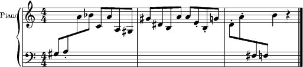Output
Example 3.2. FOMUS Usage 2
(fomus :output '(:lilypond :view t) :ensemble-type :orchestra :default-beat 1/4 :global (list (make-timesig :off 0 :time '(3 4)) (make-timesig :off 7 :time '(5 8))) :parts (list (make-part :name "Piano" :instr :piano :events (loop for basenote in '(54 42) nconc (loop for off = 0 then (+ off dur) and dur = (/ (1+ (random 4)) 2) while (< (+ off dur) 12) collect (make-note :voice '(1 2) :off off :dur dur :note (+ basenote (random 25))))))))
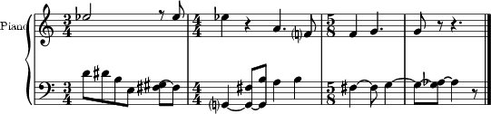Output
Example 3.3. FOMUS Usage 3
(fomus :output '(:lilypond :view t) :ensemble-type :orchestra :beat-division 4 :quartertones t :parts (list (make-part :partid 'flute :name "Flute" :instr :flute) (make-part :partid 'tuba :name "Tuba" :instr :tuba)) :events (loop repeat 5 for off = (random 1.0) then (+ off (1+ (random 1.0))) and dur = (random 1.0) and inst = (if (eq inst 'flute) 'tuba 'flute) collect (make-note :partid inst :off off :dur dur :note (+ (case inst (flute 72) (tuba 36)) (/ (random 25) 2)) :marks (case (random 3) (0 '(:accent)) (1 '(:staccato))))))
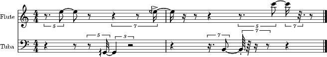Output
All of these settings are also present as special variables (see chapter Settings). The following example accomplishes exactly the same thing as example FOMUS Usage 1 above:
Example 3.4. FOMUS Usage 4
(setf *output* '(:lilypond :view t))
(fomus
:ensemble-type :orchestra
:parts
(list
(make-part
:name "Piano"
:instr :piano
:events
(loop
for off from 0 to 10 by 1/2
collect (make-note :off off
:dur (if (< off 10) 1/2 1)
:note (+ 48 (random 25))
:marks (when (<= (random 3) 0)
'(:staccato)))))))
Specifying keywords in the FOMUS function always overrides what is contained in the special variables.
Also, FOMUS accepts one additional key, :ALLOW-OTHER-KEYS.
Passing a value of T to this argument allows other keys that FOMUS doesn't recognize
to be present in the call.
By default, FOMUS accepts only keywords listed in Settings.
FOMUS also provides several functions that are wrappers to the first method described above. They create and store the objects internally so the user doesn't have to maintain lists of objects and data. The functions are:
(FOMUS-INIT
&key setting value ...)
(FOMUS-NEWPART
partid &key slot value ...)
(FOMUS-NEWTIMESIG
partids &key slot value ...)
(FOMUS-NEWNOTE
partid &key slot value ...)
(FOMUS-NEWREST
partid &key slot value ...)
(FOMUS-NEWMARK
partid &key slot value ...)
(FOMUS-EXEC
&key setting value ...)
The user first calls FOMUS-INIT, which initializes settings and insures that FOMUS is ready to
accept new data.
Setting values may be passed to this function in exactly the same way as the FOMUS
function above, though it isn't necessary in this case to include GLOBAL,
PARTS
or EVENTS.
The functions FOMUS-NEWPART,
FOMUS-NEWTIMESIG,
FOMUS-NEWNOTE,
FOMUS-NEWREST and
FOMUS-NEWMARK are then used to create and store all of the
objects that are normally included in the GLOBAL,
PARTS
and EVENTS settings.
The required partid or partids arguments correspond directly to the
slots of the corresponding objects (see the documentation for each of these in Objects for more information).
The PARTID argument to FOMUS-NEWPART
must be unique or objects that use them to refer to parts will refer to more than one.
The slot keywords can be any of the constructor slot keywords in the corresponding object, and the value
argument is the appropriate value for that slot.
Internally, FOMUS stores all TIMESIG objects
in the GLOBAL setting list, all
PART objects in the PARTS
list and all other objects (NOTE,
REST and MARK)
in the EVENTS list.
This means that the user may specify NIL or a list of part IDs in the PARTID/PARTIDS
slots of TIMESIG and MARK objects.
When the user is finished calling the FOMUS-NEW functions, the last thing to do is call
FOMUS-EXEC.
This again accepts setting keywords and values (overriding any previous setting values) and passes all information to the
FOMUS function which does the rest of the processing.
After FOMUS-EXEC is called, all internal data is reinitialized as if
FOMUS-INIT were called with no arguments.
Following are the interface 2 equivalents to some of the examples above:
You may also create a text file where each line of the file executes one of the commands listed in Interface 2. An example file is given below:
Example 3.7. FOMUS Text Input File
init :output (:lilypond :view t) ;; remark part 1 :name "Piano" :instr :piano note 1 :off 0 :dur 1 :note 60 note 1 :off 1 :dur 1 :note 62
Each element is read using the Lisp READ command (nothing is evaluated).
INIT lines specify values for FOMUS settings and can contain multiple keyword/arguments on a line.
As many INIT lines as needed may appear.
To process this file, use the FOMUS command as follows:
(FOMUS filename &key value ...)
Keyword/argument pairs passed to this function override the settings stored in the input file.
The FOMUS-FILE function may be used to parse an input file and return the objects without processing them:
(FOMUS-FILE filename &key value ...)
Four return values are returned: a list of PART objects, a sorted list of
NOTE, REST and
MARK objects, a list of TIMESIG
objects (and KEYSIG objects when implemented),
and a list of keyword/argument pairs representing the keywords and values found in the INIT lines.
The following example show how you can edit and resave data using these files:
Example 3.10. FOMUS Usage 9
(multiple-value-bind (parts events globals args)
(fomus-file "/directory/myfomusfile.fms")
;; user processing...
(apply #'fomus "/directory/myfomusfile.fms"
:global globals :parts parts :events events
args))
FOMUS may be executed as a backend to Common Music using
CM's EVENTS function.
Appending a ".ly" or ".xml" extension to the filename routes the processing to
FOMUS. Parts and time signatures may also defined in CM
with the NEW macro and passed with all of FOMUS's settings to EVENTS.
A description of this interface is given
here in
Common Music's online documentation. Several examples are given below:
If installed as a command-line executable program (see Installing as an Executable), FOMUS can be invoked from a UNIX shell prompt to process a text file in the format described above in Text File Interface. This is intended for users who don't want to use or learn Lisp and can generate the data some other way.
Lists all FOMUS instruments, merging/replacing FOMUS's own default instruments
with the user-specified contents of the INSTRUMENTS setting.
Lists all FOMUS percussion instruments (the contents of the PERCUSSION
setting).
(LIST-FOMUS-INSTRGROUPS &key :FORMAT format)
Lists FOMUS instrument ordering/grouping data, merging/replacing FOMUS's own defaults
with the contents of the INSTR-GROUPS setting.
If the FORMAT argument is T (the default), FOMUS formats the results
by listing the instruments for each grouping in a vertical score-order arrangement surrounded by [], {}
and || brackets, denoting whether instruments are grouped by brackets, curly braces or barlines only.
If FORMAT is NIL, FOMUS outputs the data as nested lists of symbols
(see the INSTR-GROUPS setting for details).
Lists all default measure divisions , merging/replacing FOMUS's own defaults
with the contents of the DEFAULT-MEAS-DIVS setting.
(See DEFAULT-MEAS-DIVS for more information.)
Lists all default tuplet divisions , merging/replacing FOMUS's own defaults
with the contents of the DEFAULT-TUPLET-DIVS setting.
(See DEFAULT-TUPLET-DIVS for more information.)
(GET-MIDI-INSTR program-change &key
:DEFAULT default-instr)
Returns an instrument to match the given MIDI program change value.
The first INSTR structure
with this number in its MIDIPRGCH-IM
slot is returned.
If no appropriate instrument is found, the value of either the DEFAULT-INSTR
setting or (if set) the DEFAULT argument is returned.
These are utility functions for adding, removing and combining marks and properties in MARKS
and PROPS slots.
ADDMARK and ADDPROP
insert a mark or property (a symbol or list of symbols and arguments values) in the appropriate slot of the object.
GETMARK and GETPROP
find a mark or property given an identifier.
The identifier is a symbol or list specifying the mark/property symbol and any number of the arguments following it.
The function returns the first mark that matches the specified symbols/values up to the number of symbols/values given.
(For example, '(:STARTSLUR- 2) will return the starting mark for a "level 2" slur.)
GETMARKS and GETPROPS
return all matching marks/properties.
RMMARK and RMPROP
remove (as a side-effect) all matching marks/properties from the objects.
COMBMARKS and COMBPROPS
returns a new mark/property list that is a combination of all marks/properties objects in the supplied list (with duplicates removed).
Table of Contents
This chapter describes several important classes and structures that provide the main way of specifying all of the part, instrument, and notational information that is passed to FOMUS for processing. Each section gives a description of a class or structure, its constructor, and a list of its accessor functions. How these are actually used depends on the interface that the user chooses to use (See Usage for more information).
All constructor functions have a corresponding copy function that take exactly the same keyword arguments plus one extra argument (the object to be copied). Any keyword/argument pairs supplied when a copy function is called indicate new replacement values. Objects may therefore be used as templates for creating new objects that differ only in one or two slot values.
The actual class hierarchy isn't given here since it shouldn't be of any concern for most users. It is reflected somewhat in the prefixes that appear in the accessor function names.
A PART object represents a written part in the score.
They are analogous to tracks in a MIDI sequencer or staves in any notation program,
though a part may actually represent more than one staff for instruments that require it.
PART objects are containers for NOTE,
REST and MARK objects
(and optionally TIMESIG and
KEYSIG object if they only apply to that particular part).
Each PART object also specifies an INSTR
object which contains specific information on how
to notate a particular instrument.
PART objects are passed to FOMUS by including them in the
PARTS list.
Constructor:
(MAKE-PART &key
:ID
id
:PARTID partid
:NAME name
:ABBREV abbrev
:INSTR instr
:EVENTS events
:OPTS opts)
Copy Function:
(COPY-PART
part &key
:ID id
:PARTID partid
:NAME name
:ABBREV abbrev
:INSTR instr
:EVENTS events
:OPTS opts)
Predicate Function: (PARTP obj)
Accessors:
OBJ-IDThis slot isn't used by FOMUS. The user may use it to store an ID value or some miscellaneous data.
PART-PARTIDThis is a symbol or number used as an index or reference to identify the part. It doesn't need to be unique--parts that share the same ID symbol are treated as a group. When they appear in
PARTIDorPARTIDSslots in classes other than thePARTclass they are treated as references to a particular part or group of parts.PART-NAMEThis is a string value representing the part name that is to appear on the score.
PART-ABBREVThis is a string value representing the abbreviated part name that is to appear on the score.
PART-INSTRThis slot specifies an instrument for the part. All part must be associated with an instrument--if no instrument is given a generic default instrument will be chosen. Instruments provide important data for many of FOMUS's algorithms and determine at least several major aspects of score layout, including the number of staves a part has and whether or not pitches are to be transposed.
Instruments may be specified in one of several ways. If a symbol is provided, it is used to lookup an instrument in a user-defined list or FOMUS's own predefined list of instruments (see the
INSTR-GROUPSsetting in the Settings chapter). The slot may also contain an instance of an instrument object. If a list is given, FOMUS expects the first element to be a lookup symbol for an instrument and the rest of the list to be keyword/argument pairs specifying slots that are to be modified in the original instrument (as if included in a call toCOPY-INSTR.If an integer from
0to127is provided instead of an identifying symbol, FOMUS interprets this as a MIDI program change number and will use the first instrument it finds that has this number in itsMIDIPRGCH-IMslot.PART-EVENTSThis is a list of
NOTE,RESTorMARKobjects.TIMESIGandKEYSIGobjects may also be included in this list.PART-OPTSThis is a keyword/argument pair list specifying options to be passed directly to the backend algorithms. Each backend has its own set of options, which may coexist in this list with any other backend options. See the Backends for more information.
A TIMESIG object indicates a time signature change in the score.
They may also be used to indicate special barlines and a few other changes.
FOMUS uses TIMESIG objects to determine where to place measures and
how to format the events that appear in them.
If new time signatures appear in the middle of a measure, FOMUS either splits the measure
or expands it to a larger size depending on the values of AUTO-OVERRIDE-TIMESIGS
and MIN-AUTO-TIMESIG-DUR.
Each time signature either specifies or implies a value that specifies what notational value is equivalent to 1 "beat" duration.
FOMUS uses this value to determine how all durational events are notated and where they appear in the score.
Unless otherwise indicated, all offsets and durations are expressed in beat units.
See the BEAT slot for information on how to specify it.
Time signatures are passed to FOMUS by including them either
in the GLOBAL list or the EVENTS
slot list of a PART object.
TIMESIG objects listed inside a part apply only to that part
(unless the PARTIDS slot
indicates otherwise).
This method most likely won't be used.
TIMESIG objects in the GLOBAL
list affect parts according to the contents of their PARTIDS slot values.
A symbol or list of symbols in the PARTIDS slot applies the time signature to the parts
that match those symbols.
A default PARTIDS slot value of NIL indicates that the time signature be
applied to all parts that don't have any other time signature specified at that exact offset.
This way you can specify that a certain TIMESIG object be applied to only several
PART objects while another TIMESIG
object by applied to all of the remaining parts.
Constructor:
(MAKE-TIMESIG &key
:ID
id
:PARTIDS partids
:OFF off
:TIME time
:COMP comp
:BEAT beat
:DIV div
:REPL repl
:PROPS props)
Copy Function:
(COPY-TIMESIG
timesig &key
:ID id
:PARTIDS partids
:OFF off
:TIME time
:COMP comp
:BEAT beat
:DIV div
:REPL repl
:PROPS props)
Predicate Function: (TIMESIGP obj)
Accessors:
OBJ-IDThis slot isn't used by FOMUS.
TIMESIG-PARTIDSThis is a reference to a particular part or group of parts. If the value of this slot is
NIL, the time signature is applied to all parts that don't have some anotherTIMESIGobject defined for them if thisTIMESIGobject is included in theGLOBALlist. If theTIMESIGobject is in aPARTobject'sEVENTSslot, the time signature is applied to the part. If the value is a symbol, number, or list of symbols or numbers, these values are used to lookup which part or parts the event belongs to.TIMESIG-OFFThis is a number (real, ratio or integer) specifying the absolute position for the onset for this note. The offset is measured in "beats," which may indicate different notational positions depending on previous time signatures and what values are present in their
BEATslots. The number must be precise and "notatable" (floating point numbers are not recommended and values like 10/3 that don't occur on regular beat divisions are currently impossible for FOMUS to notate).TIMESIG-TIMEThis is a required list of two integers, specifying the numerator and denominator of the printed time signature.
TIMESIG-COMPIf this slot is set to
T, indicates that the measure is a compound meter. The denominator of the time signature then determines the beat value.TIMESIG-BEATThe
BEATslot value determines how events are mapped from beat units to notational durations. It is a ratio that specifies what notational duration is equivalent to 1 beat. This duration is expressed as a fraction of a whole note (1/4, for example, specifies a quarter note, 1/2 specifies a half note, and 3/8 specifies three eight notes). If the time signature is a compound time signature, the value of this slot is ignored and the beat value is calculated from the denominator (for example, the beat value of a 12/8 signature is 3/8). If the slot contains the default value ofNIL, the beat value is either the value ofDEFAULT-BEATor it is calculated from the denominator (a non-compound 4/8 or 7/8 time signature would have a beat value of 1/8). Different beat values have an effect on how measures are divided and laid out, so they should be chosen to influence these things.TIMESIG-DIVThis is a single list or list of lists containing ratios or integers that add up to the total number of beats in a measure (as specified by either the
TIMEorBEATslots). It represents all of the choices available for dividing up measures following this time signature. If the slot contains the default value ofNIL, FOMUS looks up divisions first in a user-supplied table if one exists (see theDEFAULT-MEAS-DIVSsetting) then in FOMUS's default table. A value usually only needs to be specified here if the user wants to force FOMUS to divide measures in a specific way rather than choosing between several choices. The following example shows what might be specified for a 7/8 meter:As another example, setting the
TIMESIG-DIVslot to'(1 1 1)in a 3/4 time signature forces FOMUS to beam measures in groups of 3 (the default is equivalent to aTIMESIG-DIVsetting of'((2 1) (1 2)))/TIMESIG-REPLThis is a list of
TIMESIGorTIMESIG-REPLobjects that are chosen to replace thisTIMESIGobject when FOMUS needs to change the length of a measure. This gives the user some control over how FOMUS fudges measures to make them fit. When FOMUS changes the length of a measure, it will look here first and then in the (not implemented yet) setting for a replacement that fits (has the correct number of beats). If none is found, FOMUS will create a newTIMESIGobject from the current one, modifying theDIVslot by adding on extra beats if necessary.TIMESIG-REPLobjects are simplyTIMESIGobjects with missingOFF,PARTIDSandREPLslots, all of them unnecessary in this context. The use of these is optional. IfTIMESIGobjects are given, these slots are just ignored.TIMESIG-PROPSThis slot behaves like the
MARKSslot inNOTEorRESTobjects. Extra time signature or measure properties may be specified here. See FIXME for more details and theMARKclass for an example of how to specify properties.
A TIMESIG-REPL object is a "replacement"
TIMESIG object.
They are used in the REPL slot of
TIMESIG objects and in
the FIXME setting, and are simply TIMESIG objects with missing
OFF,
PARTIDS and
REPL slots.
The use of these is optional.
They are included for the sake of conciseness and to (hopefully) eliminate confusion.
Since this class is nearly equivalent to the TIMESIG class, no slot descriptions are given here.
See the TIMESIG class for an explanation of all the slots.
The predicate function TIMESIGP returns T for both
TIMESIG and TIMESIG-REPL classes.
Constructor:
(MAKE-TIMESIG-REPL &key
:ID
id
:TIME time
:COMP comp
:BEAT beat
:DIV div
:PROPS props)
Copy Function:
(COPY-TIMESIG-REPL
timesig-repl &key
:ID id
:TIME time
:COMP comp
:BEAT beat
:DIV div
:PROPS props)
Predicate Function: (TIMESIGP obj)
The NOTE object will usually be the only object required to describe
musical events that occur in the score.
It allows the user to specify pitch, offset and duration as well as which voice the event belongs to.
A special slot, MARKS, allows for a wide variety of other information including
articulations, clef and staff change overrides, "spanners" like slurs or dashed lines with text, etc..
NOTE, REST
and MARK objects are all
considered "events," and so all of their important accessors begin with an EVENT- prefix.
NOTE objects are passed to FOMUS by including them either
in the EVENTS slot list of a PART object or in
the global EVENTS list.
NOTE objects listed inside a part apply only to that part (unless the
PARTID slot indicates otherwise).
NOTE objects in the EVENTS
list are distributed to parts according to the contents their
PARTID slot values.
Constructor:
(MAKE-NOTE &key
:ID
id
:PARTID partid
:VOICE voice
:OFF off
:DUR dur
:NOTE note
:MARKS marks)
Copy Function:
(COPY-NOTE
note &key
:ID id
:PARTID partid
:VOICE voice
:OFF off
:DUR dur
:NOTE note
:MARKS marks)
Predicate Function: (NOTEP obj)
Accessors:
OBJ-IDThis slot isn't used by FOMUS.
EVENT-PARTIDThis is a reference to a particular part or group of parts. If the value of this slot is
NIL, the event is included in whatever part contains it in itsEVENTSslot list, or to all parts if it is included in the globalEVENTSlist. If the value is a symbol, number, or list of symbols or numbers, these values are used to lookup which part or parts the event belongs to. Events belonging to multiple parts are effectively copied into these parts.EVENT-VOICEThis is an integer or a list of integers specifying a voice or selection of voices that this note should belong to. Voice numbers are limited to the integers 1 through 4. The default value
NILspecifies voice 1. If a list of choices is given, FOMUS's voice distribution algorithm will try to make an intelligent decision based on voice leading, pitch, balance and other factors. Note thatRESTandMARKobjects are treated slightly differently. Settings with theVOICE-prefix can be adjusted to influence FOMUS's voicing decisions. See Settings for more information.EVENT-OFFThis is a number (real, ratio or integer) specifying the absolute position for the onset for this note. The offset is measured in "beats," which may indicate different notational values depending on what the current time signature is and what value is present in its
BEATslot. FOMUS's quantizing algorithm tries to fit all offsets and durations into values that make the best use of tuplets within given constraints while minimizing the amount of error. If this quantizing algorithm is switched off, then the user must insure that all offset and duration values are precise and "notatable" (floating point numbers are not recommended in this case).EVENT-DURThis is set to either a number to specify a regular duration or a list to specify a grace note. If it's a number (real, ratio or integer) it indicates the note's duration in beats (see
EVENT-OFFabove). The comments inEVENT-OFFon quantization also apply here. If Common Music is present andUSE-CMis set toT, the value of this slot may also be a symbol, which is parsed by CM using itsRHYTHMfunction. Symbols in this case designate notational values and not beats, although numbers are still interpreted with respect to beats and not filtered through CM'sRHYTHMfunction.If a grace note is desired then a list of two elements must be specified, the first element being the duration value described above and the second element being an integer value describing the "position" that the grace note occupies. Grace notes with the same offset are organized with respect to this position number. Lower position grace notes occur earlier in the score than higher position notes. Also, grace notes with the same position form chords, and notes with negative positions are notated with a slash. The duration value at the front of the list is still interpreted in terms of beats and notated as such even though the note does not take up time in the measure. Specifying a duration of
'(1/4 -1), for example, specifies a grace sixteenth note with a slash if the current beat is 1/4 (a quarter note).EVENT-NOTEThis slot either designates a pitch (with an optional choice of spellings) or a percussion instrument if the part is a percussion part. If specifying a pitch, the value may be either a symbol or a number (real, ratio or integer). If a number is used, 60 represents middle C, as in a MIDI file. Numbers are rounded depending on the whether semitones or quartertones are specified (see the
QUARTERTONESsetting). Symbols are assembled by concatenating a note letter name (AthroughG), a+orSfor sharp or a-orFfor flat, and an integer designating the register (4is the octave above middle C). A few examples are given here:Quartertones must be specified using numbers. If Common Music is present and
USE-CMis set toT, symbols are filtered through CM'sKEYNUMfunction. In this case, the value ofCM-SCALEwill also be passed to the function if it is set to anything other thanNIL.If a list of spelling choices is supplied, FOMUS will try to use the note spellings in this list. To specify one, the value of the
NOTEslot must be a list, the first element of which is the note number or symbol described above and the rest of which is the list of spelling choices. A spelling choice is represented either by a number or symbol.1,+orSdesignates using a sharp while-1,-orFdesignates a flat.0,Ndesignates a natural while repeating one of the above symbols (for example,++orSS) designates a double sharp or flat.2or-2also designates a double sharp or flat. Quartertones spellings are specified using a list of two elements, the first element specifying the semitone alteration and the second element specifying the quartertone alteration (one of the numbers-1/2,0or1/2). A few examples are given here:If FOMUS's note spelling algorithm is switched off then all note spellings must be supplied by the user (so each
NOTEslot must contain a list of two elements specifying the pitch and its spelling, unless it is spelled with a natural).EVENT-MARKSThis slot is nearly equivalent to the
MARKSslot in theMARKclass described below. The contents of theMARKSslots ofMARKobjects are actually dumped into theMARKSslots ofNOTEandRESTobjects once voices and staves have been decided. See theMARKclass for more information and Marks for a more detailed explanation of marks and their usage.
The REST objects should rarely be used.
FOMUS handles rests automatically and only needs user-defined rests in special
cases (such as when a fermata needs to appear in all parts).
REST objects require nearly the same information as
NOTE objects,
except that there is no NOTE slot, the marks that can be assigned to it are limited,
and voice information is treated differently
REST objects are passed to FOMUS by including them either
in the EVENTS slot list of a PART object or in
the global EVENTS list.
The behavior in either case is exactly the same as with a NOTE object.
Constructor:
(MAKE-REST &key
:ID
id
:PARTID partid
:VOICE voice
:OFF off
:DUR dur
:MARKS marks)
Copy Function:
(COPY-REST
rest &key
:ID id
:PARTID partid
:VOICE voice
:OFF off
:DUR dur
:MARKS marks)
Predicate Function: (RESTP obj)
Accessors:
OBJ-IDThis slot isn't used by FOMUS.
EVENT-PARTIDThis slot is equivalent to the
PARTIDslot in theNOTEclass.EVENT-VOICEThis slot is analogous to but different than the
VOICEslot in theNOTEclass. The difference is that when set to a list of voices, theRESTobject is distributed to all the specified voices instead of one that is chosen by FOMUS.EVENT-OFFEVENT-DURThis slot is equivalent to the
DURslot in theNOTEclass with the exception that rests cannot be grace notes.EVENT-MARKSThis slot is equivalent to the
MARKSslot in theNOTEclass. However, the number of marks that can be used in theRESTclass is limited. See theMARKclass for more information and Marks for a more detailed explanation of marks and their usage.
The MARK objects allow the user to specify marks outside of a
NOTE
or REST class.
Marks designate extra information that to be applied to a NOTE or
REST object
such as articulations, modifications like tremolos or harmonics, printed text, etc..
After voices and staff assignments have been established, information in the MARK objects is dumped into the
MARKS slots of NOTE and
REST objects
according to the values in the OFF and
PARTID slots.
There are several advantages to using MARK objects as opposed to specifying marks
in NOTE or REST objects.
One is that many markings (dynamics, for example) might only need to be attached to notes that are in one voice, such as the bottom voice of
a particular staff.
Since voice assignments for notes might not be known until FOMUS decides them,
MARK objects are the only way of insuring that the marks occur in the right place.
MARK objects are also a convenient way of specifying marks for a range of parts,
and make it easier to apply spanners such as slurs without having to juggle NOTE
objects around.
MARK objects are passed to FOMUS by including them either
in the EVENTS slot list of a PART object or in
the global EVENTS list.
The behavior in either case is exactly the same as with NOTE or
REST objects.
Constructor:
(MAKE-MARK &key
:ID
id
:PARTID partid
:VOICE voice
:OFF off
:MARKS marks)
Copy Function:
(COPY-MARK
mark &key
:ID id
:PARTID partid
:VOICE voice
:OFF off
:MARKS marks)
Predicate Function: (MARKP obj)
Accessors:
OBJ-IDThis slot isn't used by FOMUS.
EVENT-PARTIDThis slot is equivalent to the
PARTIDslot in theNOTEorRESTclass.EVENT-VOICEThis slot is equivalent to the
VOICEslot in theRESTclass, with the exception that a staff or list of staves can be specified instead of voices. Staves are indicated with a list beginning with the symbol:STAFFfollowed by one or more integer values. The integers represent staff choices and can either be negative or positive, negative indicating that the mark be placed in the uppermost voice of the staff (the staff number is the absolute value of the number given in this case) and positive indicating that the mark be placed in the lowermost voice of the staff. FOMUS chooses the option from the list that places the mark the closest to the specified offset. Following is an example of how to specify staves:Specifying a choice of staves like this allows the user to place marks like dynamics that apply to all voices but only need to appear in one place. In the case of the example above, a mark with this value in its
VOICEslot that is applied to a grand staff is attached to a note in a voice on the inside of the staff.As in the case of the
RESTclass, when set to a list of voices, theMARKobject is distributed to all of them.EVENT-OFFThis slot is equivalent to the
OFFslot in theNOTEorRESTclass, with the exception that offsets may also be wrapped inside a list and given a positive or negative value (for example,'(3),'(11.5)or'(-11.5)). When this list is used, it indicates that the marks in theMARKSslot are applied to events just before or after the given offset depending on its sign. Positive offset values indicate the mark is to applied to the event just following the offset and negative values indicate the mark is to be applied just before it (the absolute value of it). This makes it easier in some cases to place marks that indicate ends of spanners such as slurs, since marks that indicate the end of the spanner can actually be given the offset where the next spanner begins. FOMUS will place the end mark in the proper place (the event that immediately precedes the one at the indicated offset).EVENT-MARKSMARKSslots contain lists of marks. (In aNOTEorRESTobject, these marks are "attached" to that event.) Marks are specified as either symbols or lists of symbols and numbers. If it is a list, then the first element is the mark symbol followed by one or more arguments. Following is an example of what may appear in theMARKSslot:Example 4.8. EVENT-MARKS Slot Setting 1
'(:accent :startslur- (:startslur- 2 :dotted) (:texttempo "accelerando"))The
MARKclass can contain one extra mark thatNOTEorRESTobjects can't contain. The symbol itself is:MARKand actually specifies another mark that is to be placed in the same voice at a different offset. It has the following format:'(:MARK, specifying that another mark is to be placed in the same voice at the offset given. This special mark is necessary if the user specifies a staff instead of a voice and the mark is a symbol indicating the start of a spanner. It can also be used as a convenience, since only oneoffmark...)MARKobject needs to be instantiated to specify several marks that belong together. By specifying the end symbol here as part of aMARKmark, FOMUS recognizes the start and end marks as belonging to each other and will place them in the same voice. (Starting and ending marks that aren't paired in the same voice cause errors.) The offset argument that is the second element in this list uses the same extended syntax as theOFFslot in this class. The rest of the list after the second element is the mark symbol and the arguments that apply to that symbol. Following is an example:The contents of the
MARKSslots ofMARKobjects are dumped into theMARKSslots ofNOTEandRESTobjects once voices and staves have been decided. See Marks for a more detailed explanation of marks and their usage.
An INSTR structure contain instrument-specific data that's used to inform FOMUS
on various aspects of notation.
Instruments are specified in the INSTR
slot of PART objects and can be easily
modified.
Users can also build their own "database" of instruments by creating a FOMUS initialization file (see
Initialization File).
Constructor:
(MAKE-INSTR &key
:SYM
sym
:CLEFS clefs
:STAVES staves
:MINP minp
:MAXP maxp
:SIMULTLIM simultlim
:TPOSE tpose
:CLEFLEGLS cleflegls
:8UPLEGLS 8uplegls
:8DNLEGLS 8dnlegls
:PERCS percs
:MIDIPRGCH-IM midiprgch-im
:MIDIPRGCH-EX midiprgch-ex)
Copy Function:
(COPY-INSTR
instr &key
:SYM sym
:CLEFS clefs
:STAVES staves
:MINP minp
:MAXP maxp
:SIMULTLIM simultlim
:TPOSE tpose
:CLEFLEGLS cleflegls
:8UPLEGLS 8uplegls
:8DNLEGLS 8dnlegls
:PERCS percs
:MIDIPRGCH-IM midiprgch-im
:MIDIPRGCH-EX midiprgch-ex)
Predicate Function: (INSTRP obj)
Accessors:
INSTR-SYMThis is a unique symbol identifying the instrument. It is used as a lookup value so that it may easily be specified in
PARTobjects.INSTR-CLEFSThis is either a symbol or list of symbols, specifying valid clefs for the instrument in order of preference. The following clefs are supported:
:bass,:c-baritone,:f-baritone,:tenor,:alto,:mezzosoprano,:soprano,:trebleand:percussion. The user may also add an-8UPor-8DNsuffix to the symbol to specify an octave transposition.INSTR-STAVESThis is an integer specifying the number of staves to use. The default is 1.
INSTR-MINPThis is an integer specifying the lowest pitch in the instrument's range. It may also be set to
NIL, in which case the lower range is considered to be unlimited. This is only useful if theCHECK-RANGESsetting is set toT.INSTR-MAXPThis is an integer specifying the highest pitch in the instrument's range. It may also be set to
NIL, in which case the upper range is considered to be unlimited. This is only useful if theCHECK-RANGESsetting is set toT.INSTR-SIMULTLIMThis is an integer of
1or greater specifying the maximum number of simultaneous pitches allowed in a single voice. It may also be set toNIL, indicating that there is no limit.INSTR-TPOSEThis is set to the value
NILor an integer indicating the number of semitones to transpose the instrument before notating it. This number only has an effect if theTRANSPOSEsetting is set toT.INSTR-CLEFLEGLSThe value of this slot influences how FOMUS decides when to change clefs. A clef change isn't considered necessary until the number of ledger lines required exceeds a threshold value. Other factors determine if there is actually a clef change or not. If the value is an integer, it designates the threshold number of ledger lines in all cases. If it's a list, the first element of the list must be an integer specifying a default threshold. This is followed by one or more exceptions, each in the form of a list. This exception list contains a clef symbol (see the
CLEFSslot above) followed by one of the two symbols:UPor:DNand ended by an integer specifying the number of ledger lines. An example illustrates this data structure.INSTR-8UPLEGLSThis value influences how FOMUS chooses where to place ottava brackets above the staff. An ottava bracket isn't considered necessary until the number of ledger lines required exceeds a threshold value. An integer in this slot indicates the threshold value, while a list of two elements specifies the threshold for the ottava bracket to begin and the threshold below which the number of ledger lines must drop for it to end.
INSTR-8DNLEGLSThis is the same as
INSTR-8UPLEGLSabove, only for ottava brackets placed below the staffINSTR-PERCSThis is a list of symbols,
PERCobjects, numbers or lists indicating all of the percussion instruments that are to be notated together as a group.PERCobjects provide necessary extra information for notating percussion. All of these value types function to lookup percussion instruments in the same way as thePART-INSTRslot of thePARTclass. Symbols are used as lookup values into a user-defined percussion instrument table (see thePERCUSSIONsetting) or FOMUS's own predefined table. Lists contain a symbol lookup value followed by keyword-argument pairs signifying values to replace in the predefined percussion table--it will usually be necessary to use a list instead of a symbol since theNOTEandVOICEslots are empty in FOMUS's table.Example 4.11. INSTR-PERCS Slot Setting
(list '(:low-tom :note 0 :voice 1) '(:high-tom :note 4 :voice 1) (make-perc :anvil :note -3 :voice 2 :midinote-ex 79))MIDIPRGCH-IMThis is a number from
0to127or a list of such numbers specifying which MIDI program change values can translate to this instrument. This is used when specifying an instrument as a program change number (see theINSTRslot in thePARTclass) or calling theGET-MIDI-INSTRfunction. When given a program change number, FOMUS finds the first instrument that matches in its list.MIDIPRGCH-EXThis is usually a number from
0to127specifying which program change value is to be used when exporting MIDI data. It can also be set to a list, the first element of which is the number mentioned above followed by keyword/value pairs indicating alternate program change values for different playing modes. (For example, the list'(40 :pizz 45)is a valid value for a violin instrument.) The keywords currently allowed are:PIZZ,:STOPPED,:OPENand:HARMONIC. (More will be added in future releases.)
Constructor:
(MAKE-PERC &key
:SYM
sym
:STAFF staff
:VOICE voice
:NOTE note
:AUTODUR autodur
:MIDINOTE-IM midinote-im
:MIDINOTE-EX midinote-ex)
Copy Function:
(COPY-PERC
perc &key
:SYM sym
:STAFF staff
:VOICE voice
:NOTE note
:AUTODUR autodur
:MIDINOTE-IM midinote-im
:MIDINOTE-EX midinote-ex)
Accessors:
PERC-SYMThis is a unique symbol identifying the percussion instrument. It is used as a lookup value so that it may easily be specified in
INSTRstructures.PERC-STAFFThis is an integer of
1or greater specifying on which staff the instrument appears on.PERC-VOICEThis is an integer of
1or greater specifying a voice that this instrument belongs to. Specifying different voices prevents notes belonging to different instruments from being beamed together.PERC-NOTEThis is an integer or symbol designating where the instrument's notes are to appear on the staff. The value is interpreted with middle C in the center as if notated with an alto clef signature. See
EVENT-NOTEin theNOTEclass for information on specifying notes with symbols. Percussion notes should not require flats or sharps.PERC-AUTODURIf set to
T, indicates that FOMUS should determine durations for this instrument. This is appropriate for percussion instruments that don't have long sustain times and can therefore be notated with durations that are simpler to read. Notes containing certain marks such as trills and tremolos are left unchanged. This slot isTby default.PERC-MIDINOTE-IMRepresents the MIDI note or notes used to import MIDI data. This can either be an integer from
0to127or a list of such integers.PERC-MIDINOTE-EXAn integer value from
0to127representing the MIDI note used when exporting MIDI data.
Table of Contents
Settings are arguments or parameters used to pass data to FOMUS for processing.
There are a lot of them, but only a few of them are essential or even important for most users.
The most useful ones are listed below--many of the ones that aren't on this list are there
to provide some way of tweaking FOMUS's decisions or turning various
decision-making algorithms on and off.
Setting values can be passed to the FOMUS function as keyword/argument pairs or
bound as special variables, the names of which are derived by surrounding the symbol names with asterisks.
All of the variables are exported symbols in the FOMUS package.
See Initialization File for an explanation of how to modify default values for any of these settings.
:LILYPOND-EXE | :LILYPOND-VIEW-EXE | :CMN-VIEW-EXE |
:LILYPOND-OPTS | :LILYPOND-VIEW-OPTS | :CMN-VIEW-OPTS |
:LILYPOND-OUT-EXT | :LILYPOND-VERSION |
:AUTO-ACCS-MOD | :AUTO-OTTAVAS-MOD | :SPLIT-MOD |
:AUTO-BEAM-MOD | :AUTO-QUANTIZE-MOD | :TUPLET-MOD |
:AUTO-MULTIVOICE-COMB-MOD | :AUTO-STAFF/CLEFS-MOD | |
:AUTO-DISTR-RESTS-MOD | :AUTO-VOICES-MOD |
:ACC-CAUT-ACC-DISTThis number represents the maximum distance a cautionary accidental may be from the note that causes it.
:ACC-THROUGHOUT-MEASIf set to
T, accidentals carry to the end of the measure. If set toNIL, accidentals affect only the note they precede.:AUTO-ACCIDENTALSIf set to
T, FOMUS automatically determines note spellings. If set toNIL, a generic set of note spellings is used (all notes receive flats except for F sharp). The user may supply note spellings to override FOMUS's spellings.:AUTO-ACCS-MODDesignates which module is to be used for determining note spellings. Current possible values are
Tand:NOKEY1.Trepresents the default module and is equivalent to:NOKEY1.:AUTO-BEAM-MODDesignates which module is to be used for beaming. Current possible values are
Tand:BEAMS1.Trepresents the default module and is equivalent to:BEAMS1.:AUTO-BEAMSIf set to
T, FOMUS determines beaming based on time signature information and decisions it makes regarding irregular measure divisions. If set toNIL, beaming decisions are made by the backend notation program.:AUTO-CAUTIONARY-ACCSIf set to
T, FOMUS inserts several different kinds of cautionary accidentals. The user can supply her own cautionary accidentals with the:CAUTACCmark.:AUTO-DISTR-RESTS-MODDesignates which module is to be used for determining how rests are distributed among staves. Current possible values are
Tand:RESTS1.Trepresents the default module and is equivalent to:RESTS1.:AUTO-GRACE-SLURSIf set to
T, FOMUS automatically puts slurs over all grace notes. If set toNIL, the user must supply all grace note slurs with:STARTGRACESLUR-,:GRACESLUR-and:ENDGRACESLUR-marks.:AUTO-MULTIVOICE-COMB-MODDesignates which module is to be used for determining how simultaneous notes from different voices are combined into chords on the same staff. Current possible values are
Tand:COMB1.Trepresents the default module and is equivalent to:COMB1.:AUTO-MULTIVOICE-NOTESIf set to
T, FOMUS combines simultaneous notes from different voices into chords.:AUTO-MULTIVOICE-RESTSIf set to
T, FOMUS combines equivalent simultaneous rests from different voices into single rests.:AUTO-OTTAVASIf set to
T, FOMUS automatically determines where to place ottava brackets. If set toNIL, the user must supply all ottava brackets with:8UP,:8DOWNand related spanner marks.:AUTO-OTTAVAS-MODDesignates which module is to be used for determining where ottava brackets occur. Current possible values are
Tand:OTTAVAS1.Trepresents the default module and is equivalent to:OTTAVAS1.:AUTO-OVERRIDE-TIMESIGSIf set to
T, FOMUS extends or contracts measures within certain bounds, adding new time signatures as necessary to fit measures into the user-supplied time signatures given in theGLOBALorPARTSsettings. If set toNIL, FOMUS simply cuts the last measure (also inserting a new time signature) before a new time signature change, resulting in measures of arbitrary sizes depending on where the cut occurs.:AUTO-PERCUSSION-DURSIf set to
T, FOMUS determines the durations of all percussion instruments that have theirAUTODURslot set toT. Percussion instruments that don't need to be notated precisely with respect to duration are then notated with durations that are simpler to read (without tying together groups of notes).:AUTO-PIZZ/ARCOIf set to
T, indicates that FOMUS should convert each consecutive group of:PIZZmarks it finds to a single pair of:PIZZand:ARCOmarks. This makes it easier to notate pizz. and arco changes by simply attaching:PIZZmarks where they belong.:AUTO-QUANTIZEIf set to
T, FOMUS quantizes offsets and durations so that everything fits into the closest fitting tuplets and beat divisions possible. If set toNIL, all offset and duration values must be precise ratios or integers-- floating point numbers are treated with theRATIONALIZEfunction in this case (this isn't recommended). If no quantizing is done and offsets and durations of events don't fit into anything that is "notatable" then FOMUS will complain with an error.:AUTO-QUANTIZE-MODDesignates which module is to be used for quantizing. Current possible values are
Tand:QUANTIZE1.Trepresents the default module and is equivalent to:QUANTIZE1.:AUTO-STAFF/CLEF-CHANGESIf set to
T, FOMUS automatically determines staff and clef changes for voices. If set toNIL, the user must supply all staff and clef changes with:STAFF,:CLEFand related marks.:AUTO-STAFF/CLEFS-MODDesignates which module is to be used to determine automatic staff and clef changes. Current possible values are
Tand:STAVES/CLEFS1.Trepresents the default module and is equivalent to:STAVES/CLEFS1.:AUTO-VOICES-MODDesignates which module is to be used for determining how notes are distributed into separate voices. Current possible values are
Tand:VOICES1.Trepresents the default module and is equivalent to:VOICES1.:AUTO-VOICINGIf set to
T, FOMUS automatically decides how to distribute notes among multiple voices, given the choices specified in theNOTE,RESTandMARKobjects. If set toNIL, the user must specify explicitly which voice an event belongs to.:BACKENDThis is the same setting as
OUTPUT. Use one or the other, but don't use both.:BEAT-DIVISIONThe value of this setting is used by the quantizing algorithm to determine how to round offsets and durations. If only an integer is given, it represents the number of divisions per beat in a non-compound meter-- the compound meter value is then calculated by multiplying the first number by 3/2. If specified as a list of two integers, the first integer represents the number of divisions per beat in a non-compound meter while the second represents the number of divisions in a compound meter. The first number must be a power of 2 while the second number 3/2 or 3/4 times a power of 2.
A
BEAT-DIVISIONof 2, for example, tells FOMUS to quantize to eighth-note values (if the current beat is a quarter-note). In a compound 12/4 meter, this setting also tells FOMUS to quantize to an eighth-note value (2 multiplied by 3/2 is 3, and there are 3 eighth-notes per beat). In the same compound 12/4 meter, a setting of'(4 6)would cause durations to be quantized to sixteenth notes (there are 6 sixteenth notes per beat).BEAT-DIVISIONspecifies only approximately how durations are quantized inside tuplets. It is completely predictable only when theMAX-TUPLETsetting is set toNILor the notation contains nothing that would generate any kind of tuplet. When tuplets are allowed and FOMUS tries to create them, it divides them into units that are as close as possible in duration to the non-tuplet divisional units. For example, ifBEAT-DIVISIONis set to16and it's allowable for FOMUS to try to divide one beat into a septuplet, then it's possible for notes to be quantized to either 16 or 14 divisions per beat (since a septuplet divides evenly into 14 units and 1/14 is the closest septuplet divisional duration to 1/16).:CAUT-ACC-NEXT-MEASWhen set to
NIL, indicates that cautionary accidentals may occur only in the same measure as the note that causes them. When set to1, specifies that cautionary accidentals may occur only if they are in the measure immediately after the note that causes them. When set toTor2, specifies that cautionary accidentals may occur in any measure after the note that causes them.:CAUT-ACC-OCTAVESWhen set to
T, the cautionary accidental algorithm places cautionary accidentals at all octave transpositions from the note that causes them. When set to the integer1or greater, specifies the maximum number of octaves a cautionary accidental can be from the note that causes it.:CAUT-ACC-OTTAVASWhen set to
T, the cautionary accidental algorithm considers the presence of ottava brackets, placing cautionary accidentals where apparent octave transpositions might cause confusion.:CHECK-RANGESWhen set to
T, activates a check that prints warnings if it finds notes out of range for their instruments. TheMINPandMAXPslots in the appropriateINSTRobject must be set for this to have any effect.:CM-SCALEIf set to
T, indicates that the value ofCM-SCALEwill be used to parse note symbols (as the value of the:INkeyword argument) if CM is present and being used.:CMN-VIEW-EXEThis is a string specifying the path and filename to the executable for the Common Music Notation viewer application. The full pathname may or may not need to be specified depending on the Lisp implementation. The default application depends on what is installed on the user's machine, and should be an application appropriate for viewing PostScript or EPS files.
:CMN-VIEW-OPTSThis is a list of strings representing options to be passed to the CMN viewer application executable.
:COMP-LONG-EIGHTH-BEAM-COUNTThis is set to an integer greater than
0, specifying the number of eighth notes that need to be present to be beamed as groups of 6 in compound meters. This setting is only effective ifLONG-EIGHTH-BEAMSis set toT.:COMPOSERThis is an optional string value containing the composer's name.
:DEBUG-FILENAMEIf set to a string, represents the name of a file to which debug information is dumped each time the
FOMUSfunction is called. If you wish to report a bug, please send the contents of this file.:DEFAULT-BEATSpecifies a default value for the
BEATslot ofTIMESIGobjects that are not compound time signatures. This setting is1/4by default, specifying that for non-compound meters a quarternote is equivalent to 1 beat. In compound time signatures the beat is always infered from the denominator (for example, in a 12/8 meter the beat is 3/8).:DEFAULT-GRACE-DURIf FOMUS needs to convert a note into a grace note, this value is used as the grace note's duration.
:DEFAULT-GRACE-NUMIf FOMUS needs to convert a note into a grace note, this value is used as the grace note's default position number. This value together with the grace note's context determines the actual position (when necessary, FOMUS will increment or decrement this value to determine the actual position number). See the
DURslot in classNOTEfor more information.:DEFAULT-INSTRThis is a default
INSTRobject to be used in cases when another instrument isn't specified.:DEFAULT-MEAS-DIVSThis list is a table containing possible ways of dividing measures into smaller segments or divisions. These segments affect how notes are split, tied and beamed. Entries in this list replace entries in FOMUS's own default table if they exist. Each member of this list is itself a list, containing an integer or ratio lookup value as the first element followed by one or more lists of integers/ratios that each add up to the first number.
Example 5.1. DEFAULT-MEAS-DIVS Setting
:default-meas-divs '((3 (2 1) (1 2)) (4 (2 2)) (5 (3 2) (2 3)) (6 (4 2) (2 4)) (7 (4 3) (3 4)))The numbers in these lists correspond to the number of beats in a measure, multiplied or divided by 2 if necessary. In most cases, only specify integers should be necessary, though ratios may also be used. For example, if a 7/8 measure with a quarter-note beat is processed, FOMUS first tries to lookup a set of divisions using the index number 7/2, then 7, 14, etc.. This way the lookup value
7is sufficient for any meter with a numerator of 7, though it's possible to supply more specific entries such as7/2(for measures that contain 3 + 1/2 beats).:DEFAULT-TIMESIGIf no time signature is specified in the
GLOBALorPARTSlists, this default one is used.:DEFAULT-TUPLET-DIVSThis list is a table containing possible ways of dividing tuplets into smaller segments or divisions. These segments affect how notes are split, tied and beamed. Entries in this replace entries in FOMUS's own default table if they exist. Each member of this list is itself a list, containing an integer lookup value as the first element followed by one or more lists of integers that each add up to the first number.
Example 5.2. DEFAULT-TUPLET-DIVS Setting
:default-meas-divs '((3 (2 1) (1 2)) (4 (2 2)) (5 (3 2) (2 3) (4 1) (1 4)) (6 (4 2) (2 4)) (7 (4 3) (3 4)))The numbers in this list correspond to numerators of tuplet ratios (or multiples or divisions of two). When FOMUS needs to find possible divisions for a triplet, for example, it uses the entries in the list corresponding to lookup value
3. If it needs to lookup divisions for a sextuplet, it will first try to lookup the number6and then use3if an entry for6doesn't exist.:DEFAULT-TUPLETSThis list is a lookup table indicating what ratios FOMUS should use when deciding how to notate tuplets. Each list element is itself a list of two integers specifying a tuplet ratio, or how many durational units should be used in place of another.
'(7 4)thus specifies that septuplet eighth notes are to be used in place of 4 eighth notes. FOMUS searches this table by finding a match for number of tuplet divisions (the first integer in each pair) and checking the second integer to see if it's appropriate for the context it is in (a power of 2 of the actual number of durational units). Thus, several entries for septuplets might exist:'(7 4)for the majority of cases and'(7 5)for cases where, for example, 7 eighth notes might span an entire 5/8 measure or a section of a larger tuplet.Example 5.3. DEFAULT-TUPLETS Setting
:default-meas-divs '((3 2) (6 5) (5 4) (7 4) (7 5) (13 8) (13 10))The default value is
NIL. If FOMUS doesn't find an entry for a tuplet division here, it determines its own depending on the value ofTUPLET-MOD.:DOTTED-NOTE-LEVELIndicates how dotted notes are allowed to appear. Possible values are
T,:ALL,:TOPand:SIG.:ALLspecifies that they can appear anywhere,:TOPspecifies that they can appear only if they occupy an entire measure, and:SIGspecifies that they can appear if they occupy durations larger than a beat.Tis equivalent to:ALL.:DOUBLE-DOTTED-NOTESIf set to
T, indicates that double-dotted notes are allowed.:EFFECTIVE-GRACE-DUR-MULIf FOMUS needs to determine the effective duration of a grace note (for scoring or comparison purposes), it multiplies the value of this setting with the duration given in the grace note's
DURslot.:ENSEMBLE-TYPEThis setting determines how parts are both ordered and grouped together with brackets and barlines in the score. Setting this to a symbol specifies a lookup value for a ordering/grouping table entry specified in the
INSTR-GROUPSsetting or FOMUS's own default table. It may also be set to an ordering/grouping data structure, in which case this specified ordering/grouping is used instead. An ordering/grouping data structure is a list of symbols or nested lists of symbols that specify both the groups and the layout order of parts. A symbol specifies an instrument while a list contains a group type (a symbol designating what type of bracket is to appear on the left-hand margin of the score and how barlines are to appear) followed by more instrument symbols or lists (see the example below). A group type is one of the symbols:GROUP,:GRANDSTAFFor:CHOIRGROUP.A look at the following examples might make this clearer:
Example 5.5. ENSEMBLE-TYPE Setting 2
:ensemble-type '((:my-orchestra (:group (:group :piccolo :flute) (:group :oboe :english-horn) (:group :bf-clarinet :a-clarinet :bass-clarinet) (:group :bassoon :contra-bassoon)) (:group (:group :horn) (:group :c-trumpet :bf-trumpet) (:group :alto-trombone :tenor-trombone :bass-trombone) (:group :tuba)) :timpani :percussion (:grandstaff :piano) (:group (:group :violin) (:group :viola) (:group :violoncello) (:group :contrabass)))):EVENTSThis is a global list of events to be processed by FOMUS. An event can be a
NOTE,RESTorMARKobject. ANOTEorRESTobject must have a symbol or number in itsPARTIDslot specifying which part it belongs to. AMARKobject may have a defaultPARTIDvalue ofNILto specify all parts or a symbol/number or list of symbols/numbers to specify only those parts. (Note that specifying part ID information isn't necessary when event objects are listed in theEVENTSslot of aPARTobject. Including these objects in the events list provides an alternative to listing them insidePARTobjects.) See Objects for more detailed descriptions of these objects and their uses.:FILENAMEThis string represents the path and name of a file to which FOMUS adds an appropriate extension when it saves its output. This setting in combination with the
BACKENDsetting determines the actual output filenames.:GLOBALThis is a list of objects that have "global" influence over other events in the
PARTSandEVENTSsettings. Only objects of typeTIMESIGandKEYSIGare allowed here (KEYSIGisn't implemented yet). When a global object'sPARTIDSslot is set to the default value ofNILthe object affects all parts that don't already have aTIMESIGorKEYSIGattached to them at that point. When itsPARTIDSslot is set to symbol or list of symbols the object affects those parts only. This enables the specification of multiple simultaneous time signatures and polymeters (not implemented yet).:GRANDSTAFF-HIDE-RESTSWhen set to
Tor:SOME, indicates that FOMUS hides some rests when combining multiple voices in a grand staff. This makes the notation easier to read for multi-staff instruments by eliminating rests that aren't necessary. When set to:ALLindicates that all rests in all parts are hidden (this could be more useful in the future when proportional notation is supported). When set toNILindicates that no rests are hidden.:INPUT-BEAT-VALUEWhen set to some real number greater than
0, indicates that this durational value is to be interpreted as one beat. FOMUS effectively scales all input objects by dividing offsets and durations by this value before doing any other processing. A value ofNILis the default and is equivalent to1.:INSTR-GROUPSThe value of this setting is a table in the form of a list that provides a way of adding instrument orderings and groupings to FOMUS's own default table. These tables map symbol lookup values to ordering/grouping data structures which specify how parts are both ordered and grouped together with brackets and barlines in the score. The user may choose one of these groupings by setting
ENSEMBLE-TYPEto a symbol lookup value. The user-supplied list is searched first so user-supplied orderings/groupings can override FOMUS's default orderings/groupings.The setting is a list of lists, the first element in each inner list containing a symbol specifying a unique lookup name. These are followed by grouping/ordering definitions: symbols or nested lists of symbols that specify both the groups and the layout order of parts. In this data structure a symbol specifies an instrument while a list contains a group type (a symbol designating what type of bracket is to appear on the left-hand margin of the score and how barlines are to appear) followed by more instrument symbols or lists (see the example below). A group type is one of the symbols
:GROUP,:GRANDSTAFFor:CHOIRGROUP.A look at the following example might make this clearer:
Example 5.7. INSTR-GROUPS Setting
:instr-groups '((:orchestra (:group (:group :piccolo :flute) (:group :oboe :english-horn) (:group :bf-clarinet :a-clarinet :bass-clarinet) (:group :bassoon :contra-bassoon)) (:group (:group :horn) (:group :c-trumpet :bf-trumpet) (:group :alto-trombone :tenor-trombone :bass-trombone) (:group :tuba)) :timpani :percussion (:grandstaff :piano) (:group (:group :violin) (:group :viola) (:group :violoncello) (:group :contrabass))) (:ensemble :piccolo :flute :oboe :english-horn :bf-clarinet :a-clarinet :bassoon :contra-bassoon (:grandstaff :piano))):INSTRUMENTSThe user can use this setting to specify additional
INSTRobjects that are added to the default instrument list. FOMUS searches this list before its own default list when resolving symbols to instrument definitions, so they may be replacements or modifications of existing instruments. The contents are either instrument objects created withMAKE-INSTRor lists specifying modifications to FOMUS's default instruments (or a combination of both). If a list is specified, it contains a symbol specifying a default instrument followed by keyword/argument pairs indicating slot values that replace existing default values (see theINSTRslot in thePARTobject and PART-INSTR Slot Setting for an example of this).Example 5.8. INSTRUMENT Setting
:instrument (list (make-instr :recorder :clefs :treble) '(:piano :staves 3 :simultlim 6)):LILYPOND-EXEThis is a string specifying the path and filename to the LilyPond executable. The full pathname may or may not need to be specified depending on the Lisp implementation.
:LILYPOND-OPTSThis is a list of strings representing options to be passed to the LilyPond executable. The default is currently
'("--ps")for Linux or'("--pdf")for OS X/Windows, specifying that LilyPond should generate either a PostScript or PDF format file.:LILYPOND-OUT-EXTThis is a string specifying the extension for the output filename that is created when LilyPond is run. The default is
"ps"for Linux and"pdf"for OS X/Windows.:LILYPOND-VERSIONIf set to a string (for example,
"2.8"), forces FOMUS to output LilyPond files for that version.:LILYPOND-VIEW-EXEThis is a string specifying the path and filename to the executable for the LilyPond viewer application. The full pathname may or may not need to be specified depending on the Lisp implementation. The default application depends on what is installed on the user's machine, and should be one appropriate for viewing PostScript files.
:LILYPOND-VIEW-OPTSThis is a list of strings representing options to be passed to the LilyPond viewer application executable.
:LONG-EIGHTH-BEAM-COUNTThis is set to an integer greater than
0, specifying the number of eighth notes that need to be present to be beamed as a group of 4. This setting is only effective ifLONG-EIGHTH-BEAMSis set toT.:LONG-EIGHTH-BEAMSIf set to
T, specifies that the beaming algorithm should beam eighth notes into groups of up to 4 under certain conditions (if enough of them are present). If set to:ALWAYS, specifies that eighth notes are always beamed in groups of 4. If set toNIL, specifies that eighth notes are never beamed in groups of 4.:MAX-OTTAVA-REST-DISTThis is a real number greater than
0, specifying the maximum distance an ottava bracket will span over a group of contiguous rests.:MAX-TUPLETIf set to an integer, represents the largest tuplet allowed. If set to a list of integers, represents the largest tuplets allowed for each nested tuplet level (and also specifies how many levels of tuplet nesting are allowed by the length of the list). A value of
'(7 3), for example, specifies two levels of tuplet nesting with septuplets being the maximum allowed in the outer level and triplets being the maximum in the inner level. A value ofNILspecifies that no tuplets are to be used.:MAX-TUPLET-DURThis is the largest duration in beats that a tuplet can span.
:MIN-AUTO-TIMESIG-DURif
AUTO-OVERRIDE-TIMESIGSis set toT, FOMUS automatically generates new time signatures as necessary to fit measures into the time signatures specified in theGLOBALandPARTSlist. The value of this setting represents the smallest duration (in beats) of any such time signature that is generated. See TIMESIG and TIMESIG-REPL for more information.:MIN-GRANDSTAFF-HIDE-RESTS-DURThis is a real number greater than
0, specifying the minimum duration that a group of simultaneous rests must occupy in order for some of them to be hidden. This is applicable only when there are multiple voices on a staff, in cases where several simultaneous rests can be shown as one rest.AUTO-MULTIVOICE-RESTSmust also be set toTfor this to have any effect.:MIN-MULTIVOICE-CHORDS-DURThis is a real number greater than
0, specifying the minimum duration a group of simultaneous notes in separate voices must span to be combined into chords. This is applicable only when there are multiple voices on a staff, and ifAUTO-MULTIVOICE-NOTESis set toT.:MIN-SPLIT-ALL-PARTS-DURThis is the smallest duration that FOMUS will consider when deciding whether or not to "split" or divide all parts together or separately. (Splitting means splitting and tying notes as necessary to properly notate a given rhythm in a given measure.) A unit of music must be larger than this value to be considered--units equal to or smaller than this duration are not considered. FOMUS splits measures in all parts together up to a certain point to insure that the notation is consistently divided in all parts. A 5/8 measure, for example, will be consistently divided as either 3 + 2 to 2 + 3 in all parts together (as long as the value of this setting is smaller than the duration of a 5/8 measure).
:MIN-TUPLET-DURThis is the smallest duration in beats that a tuplet can span.
:PARTSThis is a list of
PARTobjects, each representing a stave or grand staff in the score. At least one part must be specified.:OUTPUTThis is either a list or a list of lists specifying one or more output files with optional keyword/argument pairs for tweaking their contents. Current possible output symbols are
:DATAor:FOMUS,:RAW,:MUSICXML,:MUSICXML-SIBELIUS,:MUSICXML-FINALE,:CMN,:LILYPONDand:MIDI. More information on these is given in Backends. The following are examples of valid output specifications::PERCUSSIONThis is a list of
PERCUSSIONobjects serving as a lookup table for information pertaining to percussion notation.PERCUSSIONobjects are listed inINSTRobjects to define collections of percussion instruments that are notated together on a single staff. FOMUS searches this user setting list before its own default list when resolving symbols to percussion instrument definitions, so they may be replacements or modifications of FOMUS's predefined percussion instruments. The contents are either percussion objects created withMAKE-PERCor lists specifying modifications to FOMUS's default percussion objects (or a combination of both). If a list is specified, it contains a symbol specifying a default percussion instrument followed by keyword/argument pairs indicating slot values that replace existing default values (see thePERCSslot in theINSTRobject for an example of this).Example 5.12. PERCUSSION Setting
:instrument (list (make-perc :anvil :note -3 :voice 2 :midinote-ex 79) '(:triangle :note 0 :voice 1))See the documentation for
PERCUSSIONobjects for more information.:QUALITYThis is a real number indicating how much FOMUS should trade speed of computation for "quality" of output. Setting it lower increases speed while setting it higher gives better results. The default is
1, which is reasonable for relatively uncomplicated scores with a small number of parts. The most effective values are between approximately-3and3, though complex scores might show a little improvement (better guesses within a larger context) with values of5or more. After a certain point increasing this value only makes the program run slower with no noticeable improvement in output.:QUARTERTONESIf set to
T, FOMUS rounds pitches to quartertone values and uses quartertone notation in the score. This only works if the algorithm specified by theAUTO-ACCS-MODsetting supports it. The only module provided so far,:NOKEY1, supports quartertones.:SHORTLONGSHORT-NOTES-LEVELIndicates how "short-long-short" note patterns are allowed to appear. An example of such a pattern is an eighth note followed by a quarter note then an eighth note, and is treated as an exception to insure that the middle note isn't split in the middle and tied. Possible values are
T,:ALL,:TOPand:SIG.:ALLspecifies that this pattern can appear anywhere,:TOPspecifies that it can appear only if it occupies an entire measure, and:SIGspecifies that it can appear if it occupies a duration larger than a beat.Tis equivalent to:ALL.:SPLIT-MODDesignates which module is to be used for splitting and tying notes. Current possible values are
Tand:SPLIT1.Trepresents the default module and is equivalent to:SPLIT1.:SUBTITLEThis is an optional string value containing the subtitle of the composition.
:SYNCOPATED-NOTES-LEVELWhen set to
T, indicates that a certain syncopated note pattern, a short note followed by any number of long notes then a short note, may appear. An example of such a pattern is an eighth note followed by several quarter notes then an eighth note. This can only occur if the pattern occupies the duration of an entire measure.:TIMESIG-STYLEThis indicates how time signature are printed. It can be set to
:FRACTIONor:COMMON, specifying that either fractional or common time signatures are to be used in the backend (given the choice). The default value ofNILis equivalent to specifying:FRACTION.:TITLEThis is an optional string value containing the title of the composition.
:TRANSPOSEWhen set to
T, activates a transposition function that automatically transposes note values. TheTPOSEslot of the appropriateINSTRobjects must be set for this to have any effect.:TUPLET-DOTTED-RESTSIf set to
T, specifies whether or not dotted rests are allowed inside tuplets of irregular (ie. not a power of 2) divisions. For example, a quintuplet might be divided into a dotted eight rest followed by an eighth note ifTUPLET-DOTTED-RESTSis true.:TUPLET-MODDesignates which module is to be used for determining tuplet ratios. Current possible values are
T,:POW2and:DUR.Trepresents the default module and is equivalent to:POW2.:POW2determines tuplet ratios based on the rule that the number of tuplet divisions replace (in most cases) the number of durational units equaling the next lowest power of two. FOMUS thus notates 7 in the time of 4 and 13 in the time of 8.:DURdetermines ratios by finding the closest number of durational units to the number of tuplet divisions. FOMUS then notates 7 in the time of 8 and 13 in the time of 16.:TUPLET-STYLESpecifies how tuplets are to be printed. The possible values are
:RATIOor:SINGLE. The default value ofNILis equivalent to:SINGLE.:USE-CMIf set to
T, indicates that FOMUS should use Common Music functions if present. Note symbols are then parsed by CM using the value ofCM-SCALEas if it were passed as the:INargument to CM'sKEYNUMfunction. Also, durations specified as symbols indicate notational durations and are interpreted as such using CM'sRHYTHMfunction. Numbers are still interpreted by FOMUS in terms of beats.:USE-DOUBLE-ACCSIf set to
T, the note spelling algorithm considers double sharps and double flats in addition to single sharps and flats.:VERBOSEThis must be set to a value from
0to2, indicating the amount of printed output. A value of0represents minimal output while a value of2represents maximal output.
Table of Contents
Marks are symbols or lists of symbols with arguments that appear in the MARKS slots of
NOTE,
REST and
MARK objects.
All extra information (articulations, ornamentations, etc.) that doesn't have a special slot in these objects is indicated with marks.
A few "marks" can also appear in TIMESIG and
PART objects, but are called properties--for these, the syntax is exactly the same.
Two types of marks exist:
Simple marks that apply only to the
NOTE,RESTorMARKobject they are included in.Marks that indicate they are to be applied over a range of these objects. These marks are distinguished by a trailing dash character at the end of the symbol (for example,
:STARTSLUR-and:ENDSLUR-). Exceptions that don't have a trailing dash are:STARTWEDGE>and:STARTWEDGE<and related marks.
The second type is mostly used to indicate "spanners," or items in the score that occur across a range of notes such as slurs or ottava brackets.
Most of them come in a group of three, one prefixed with the string START, another with no prefix, and the last one with the prefix
END. (For example, :STARTSLUR-, :SLUR- and :ENDSLUR-.)
Spanner marks may be indicated in two different ways:
The
STARTandENDmarks are inserted in the objects that occur where the spanner begins and ends.The
STARTmark is inserted in the object at the point where the spanner starts and the mark without a prefix is placed in subsequent objects up to the point where the spanner ends. The last object with a mark in it before a newSTARTmark is found is considered to be the end of the spanner.
In either case, care must be taken to insert all marks that belong together either in the same voice or the same staff, depending on the type of mark.
Formats for marks and their arguments are shown in a pseudo lambda-list style format with &optional symbols to designate optional arguments.
Some arguments are shown as a choice between several options or symbols, each separated by a pipe character.
In most cases, it doesn't matter in what order the arguments appear--FOMUS figures out which is which by the data types
(reorderable arguments like this are shown by a double arrow figure).
Also, spanner marks that belong together are shown together and separated with forward slashes.
The following list is a reference for the some of the arguments given in the following sections:
art-order- An integer for articulations specifying relative closeness to the notehead (lower numbered articulations are closer than higher numbered ones).
clef- A valid clef symbol (see the
CLEFSslot in structureINSTRfor a list of these symbols). level-
This integer distinguishes between inner and outer levels of spanner markings. The default value is 1.
Smaller numbers are "inner" markings occurring close to the staff while larger numbers are "outer" markings
occurring farther away from the staff. There are two methods of designating which level a mark is to appear on.
The first is to use the same few level numbers repeatedly (for example,
1may be used to designate the 1st or innermost level and2to designate the 2nd level, as in two levels of slur markings). This method allows the user to be "lazy" and leave out matchingSTARTandENDmarks--FOMUS can supply the missing marks by finding the nextSTARTorENDmarks in that level. The second method is to use a separate number for each start/end pair--in this case, allSTARTmarks must have matchingENDmarks or FOMUS will try to supply missing marks for each individual "level" and create a mess. note- A valid note symbol or number (see the
NOTEslot in theNOTEclass). string- A text string.
trem-subdiv- A durational value (a ratio or integer) for a tremolo subdivision. It is specified in beats (for example, if one beat equals
a quarter note value, a tremolo with a value of
1/2indicates an eighth-note tremolo,1/4indicates a sixteenth-note tremolo, etc.). If the optional:NOTATEDkeyword is given, the number is instead interpreted as a written duration regardless of the beat value (so in this case, 1/8 indicates an eighth-note tremolo, 1/16 indicates a sixteenth-note tremolo, etc.). The absence of a number indicates an unmeasured tremolo and is notated with three tremolo beams.
Marks with no arguments can always be indicated with a symbol only (the enclosing list isn't necessary). Also, many of these symbols closely correspond to symbols used in some of the backend formats (MusicXML and LilyPond). Not all symbols are supported in all of the backends.
These marks add articulation symbols to notes. Multiple levels of slurs may be specified (FOMUS
applies extra sorting to slurs to insure that smaller ones occur in the "innermost" level while larger ones occur in the "outermost" level).
The :GRACESLUR- marks are slurs reserved for gracenotes, and
are automatically added by FOMUS by default.
(:STACCATO &optional |
(:STACCATISSIMO &optional
|
(:ACCENT &optional |
(:MARCATO &optional |
(:TENUTO &optional |
(:PORTATO &optional |
(:STARTSLUR- &optional
/ (:SLUR- &optional
/ (:ENDSLUR- &optional
|
:STARTGRACESLUR- / :GRACESLUR- / :ENDGRACESLUR- |
These add common dynamic markings. The :WEDGE> and
:WEDGE< marks create wedge-shaped crescendo and decrescendo markings.
All of the dynamics marks may be appended with an asterisk (for example FFF* or :STARTWEDGE<*).
These marks are equivalent to the non-asterisk versions, the only difference being that during MIDI playback dynamics changes will affect all voices in a part.
This allows the user to specify one set of notated dynamics markings for a part with multiple voices
(using MARK objects, for example), but have the MIDI playback rendered more accurately.
:FFFFFF |
:FFFFF |
:FFFF |
:FFF |
:FF |
:F |
:MF |
:MP |
:P |
:PP |
:PPP |
:PPPP |
:PPPPP |
:PPPPPP |
:SFZ |
:SFF |
:RFZ |
:FP |
:SF |
:SP |
:SPP |
:STARTWEDGE> / :WEDGE> / :ENDWEDGE> |
:STARTWEDGE< / :WEDGE< / :ENDWEDGE< |
These are notation symbols that affect duration. Three different types of fermatas may be specified (the default is :SHORT if none is specified).
Breath marks may be set to occur before or after the note it's attached to (the default is :AFTER).
The :AUTODUR mark indicates that FOMUS should determine the duration of the
note, appropriate for events such as pizzicatos or other percussive-type attacks that don't require a specific duration but only a simply notated one.
This has an effect only if the AUTO-PERCUSSION-DURS setting
is set to T.
(:FERMATA &optional |
(:BREATH &optional |
(:AUTODUR) |
These marks add common ornamentation markings.
Glissandi and portamenti may be set to occur before or after a note (the default for both is :BEFORE).
A :TREMOLO mark is notated by placing slashes over the note stems while the
:TREMOLOFIRST and
:TREMOLOSECOND marks refer to the chordal tremolos commonly
found in piano scores. These are processed by separating the notes marked "first" from the ones marked "second" into separately notated chords
and placing a tremolo-style beam over them. The optional :NOTATED keyword indicates that the subdivision number is to be
interpreted as a written duration.
The optional :UP and :DOWN keywords in the :ARPEGGIO
mark specify that a direction is to be notated using an arrowhead.
The optional note arguments are for specifying the trill note.
Only half and whole step trills are currently supported (and unison trills for percussion instruments).
(:TREMOLO &optional |
(:TREMOLOFIRST &optional
|
(:TREMOLOSECOND &optional
|
(:LONGTRILL &optional |
(:ARPEGGIO &optional |
(:GLISSANDO &optional |
(:PORTAMENTO &optional |
(:TRILL &optional |
(:MORDENT &optional |
(:PRALL &optional &optional |
These marks are for special instrument-specific effects or instructions.
If the AUTO-PIZZ/ARCO setting is set to T,
the :ARCO marks shouldn't be needed--FOMUS inserts them where they are necessary.
Harmonics are specified by attaching one or more :HARMONIC marks, each
indicating an extra note to appear above the base note.
Specifying :SOUNDING (the default) causes a small parenthesized notehead to appear while specifying
:TOUCHED causes a diamond notehead to appear.
The actual results may vary depending on the backend (extra editing may be required).
Notes are indicated with either a symbol or number, as in the NOTE
slot in the NOTE class.
(Extra accidentals are not specified here.)
:PIZZ |
:ARCO |
(:HARMONIC
|
(:OPEN &optional |
(:STOPPED &optional |
(:UPBOW &optional |
(:DOWNBOW &optional |
(:THUMB &optional |
(:LEFTHEEL &optional |
(:RIGHTHEEL &optional |
(:LEFTTOE &optional |
(:RIGHTTOE &optional |
Different kinds of text may be attached to events.
:TEXTNOTE is for text that appears over a single note (for example, "sul G"),
:TEXT and :TEXT-
are for italicized texts that appear above or beneath the staff,
:TEXTTEMPO indicates tempo changes (and is printed in a larger boldface font),
and :TEXTDYN is for texts appearing in a dynamics-type font.
For text spanners, "levels" may be specified to influence the order of their placement on the score.
(:TEXTNOTE |
(:TEXT |
(:STARTTEXT-
/ (:TEXT- &optional
/ (:ENDTEXT- &optional
|
(:TEXTTEMPO |
(:TEXTDYN |
Most of these behave as user overrides to FOMUS's automatic algorithms.
:CAUTACC indicates that a cautionary accidental is to be placed before
the note. :FORCEACC forces an accidental spelling.
:NOTEHEAD indicates a different notehead.
The :CLEF and :CLEF- spanner
marks indicate clef changes and regions where a certain clef is required. A clef spanner must occur in a single voice.
All marks containing 8UP and 8DOWN are overrides for ottava brackets and must be specified
for notes that appear in a single staff rather than a voice. The :TIE mark
ties a note to the following or previous note depending on whether :BEFORE or :AFTER (default) is supplied
and whether or note the adjacent note is the same.
:CAUTACC |
:FORCEACC |
(:NOTEHEAD
|
(:CLEF |
(:STARTCLEF
/ :CLEF- / :ENDCLEF- |
:8UP |
:START8UP- / :8UP- / :END8UP- |
:8DOWN |
:START8DOWN- / :8DOWN- / :END8DOWN- |
(:TIE &optional |
These are marks that are specified in TIMESIG objects
(and are called properties rather than marks). They either affect one location in the score at the
TIMESIG object's offset or the entire region of the score governed by that time signature.
At the moment there's only one property, :BARLINE that
changes the type of barline that appears at the TIMESIG's
offset.
(:BARLINE
|
These are "marks" that are specified in PART objects
(and are called properties rather than marks). They either change how the part appears in the score or affect
all of the objects in that part some way.
At the moment there's only one property, :DISTR that
allows the user to distribute notes or rests across several other parts. This is done by voice so that
the user may specify multiple parts for a single instrument but insert all of the events into only one of them.
The user may then, for example, treat four violins as one instrument, inserting note events for all four instruments into
one part and letting FOMUS's voice separating algorithm figure out how they are distributed to the actual parts that appear in the score.
The syntax of this property is given below.
The PARTID argument specifies the part that notes and rests are moved to once all voices have been determined. The VOICE or
VOICEFROM arguments specify which events are to be moved. VOICETO, if given, specifies
the voice the events will have once they have been moved. If VOICETO isn't given, then the new voice defaults to
the position of the argument in the list. (:DISTR (PRT1 2 3) (PRT2 1 4)) is then equivalent to
(:DISTR (PRT1 (2 1) (3 2)) (PRT2 (1 1) (4 2)))--events in voices 2 and 3 are distributed to the part PRT1
as voices 1 and 2 while events in voices 1 and 4 are distributed to PRT2 as voices 1 and 2.
(:DISTR
( |
Table of Contents
This chapter explains options specific to each of the possible output formats.
One or more backends may be selected with the BACKEND setting.
Most options are passed as keyword/argument pairs via this setting or in the
OPTS slot of the PART
class.
Current possible backend symbols are :DATA or :FOMUS, :RAW, :MUSICXML,
:MUSICXML-SIBELIUS, :MUSICXML-FINALE, :CMN, :LILYPOND and :MIDI.
Attention must be made to spelling since misspelled keyword arguments are ignored rather than cause errors (this will be improved in future releases).
The base output filename is specified using the FILENAME setting.
It may be overridden by the filename option present in each of the backends.
Each backend adds its own extension (for example, a LilyPond file always has a .ly extension).
This produces a file with extension .fms containing a dump of the data that is
sent to FOMUS before any processing occurs.
If this is the only backend specified, FOMUS simply saves the data and returns without further processing.
It may be specified using either the :DATA or :FOMUS keywords in the
BACKEND setting.
The file is editable and can be reloaded for editing and processing by calling the FOMUS
function with the name of the file. See Text File Interface for a description of this file format.
FOMUS currently creates notation files for LilyPond versions 2.4 and 2.6.
The BACKEND setting keyword to use is :LILYPOND.
FOMUS outputs a slightly different file depending on whether LilyPond version 2.4 or 2.6 is installed to insure
that it compiles correctly (a file for one version may give an error when compiled in the other version).
A .ly extension is added to the base filename to make the complete output filename.
When FOMUS loads it looks for LilyPond
and viewer application executables in several locations in the filesystem.
If these executables are in an uncommon location or the user wants to specify these herself, several options exist for
setting the pathnames and changing command line arguments.
When setup correctly, FOMUS can automatically compile the output file and launch a viewer (a PostScript
viewing application in Gnome or KDE
or the Preview application in OS X).
Tremolos might be represented by displaying slash marks (like in the MusicXML
:XML-1NOTE-TREMOLO-KLUDGE
and :XML-MULTINOTE-TREMOLO-KLUDGE options)
in rare cases where they can't be indicated properly.
:FILENAME | :VIEW-OPTS | :OUT-EXT |
:PROCESS | :VERSION | :TEXT-MARKUP |
:VIEW | :FILEHEAD | :TEXTDYN-MARKUP |
:EXE | :SCOREHEAD | :TEXTTEMPO-MARKUP |
:OPTS | :LILY-PARTHEAD | :TEXTNOTE-MARKUP |
:VIEW-EXE | :LILY-PARTNAME |
:EXEThis is a string specifying the path and filename to the LilyPond executable. The full pathname may or may not need to be specified depending on the Lisp implementation. This overrides the
LILYPOND-EXEsetting if used.:OPTSThis is a list of strings representing options to be passed to the LilyPond executable. The default is currently
'("--ps")for Linux or'("--pdf")for OS X/Windows, specifying that LilyPond should generate either a PostScript or PDF format file. This overrides theLILYPOND-OPTSsetting if used.:FILEHEADThis is a string or list of strings representing text to be inserted directly into the output file. Each string in the list is followed by a carriage return. The text is inserted near the top of the file at a point before any score or part data appears.
:FILENAMEThis is a string representing the output filename. It overrides the
FILENAMEsetting if used.:OUT-EXTThis is a string specifying the extension for the output filename that is created when LilyPond is run. The default is
"ps"for Linux and"pdf"for OS X/Windows. This overrides theLILYPOND-OUT-EXTsetting if used.:LILY-PARTHEADThis option is specified in
PARTpart objects and is valid only for that part. It is a string or list of strings representing text to be inserted directly into the output file. Each string is followed by a carriage return. The text inserted at the beginning of a staff section just before note, rest and other information appears for that part in the file.:LILY-PARTNAMEThis option is specified in
PARTpart objects and is valid only for that part. It is a string representing a part name used to uniquely identify the part in the output file. If it isn't supplied, FOMUS automatically generates a name.:PROCESSIf set to
T, indicates that FOMUS should call LilyPond to process the output file once it's been written. If set toNIL, only the output file is written and no processing occurs (unlessVIEWis set toT).:SCOREHEADThis is a string or list of strings representing text to be inserted directly into the output file at the beginning of a score block. Each string in the list is followed by a carriage return.
:TEXT-MARKUPThis is a "wrapper" string specifying LilyPond markup instructions to be used when specifying text to be printed above or below the staff. The string must have an
~Aor similar substring to indicate where to place the actual text (as if in a call toFORMAT). The default value is"\markup{\italic{~A}}".:TEXTDYN-MARKUPThis is a "wrapper" string specifying LilyPond markup instructions to be used when specifying text to be printed in a dynamic-type font. The string must have an
~Aor similar substring to indicate where to place the actual text (as if in a call toFORMAT). The default value is"\markup{\dynamic{\italic{\bold{~A}}}}".:TEXTNOTE-MARKUPThis is a "wrapper" string specifying LilyPond markup instructions to be used when specifying text to be printed above single notes. The string must have an
~Aor similar substring to indicate where to place the actual text (as if in a call toFORMAT). The default value is"\markup{\italic{~A}}".:TEXTTEMPO-MARKUPThis is a "wrapper" string specifying LilyPond markup instructions to be used when specifying text to be printed in a heavy "tempo" font. The string must have an
~Aor similar substring to indicate where to place the actual text (as if in a call toFORMAT). The default value is"\markup{\bold{\huge{~A}}}".:VERSIONIf set to a string (for example,
"2.8"), forces FOMUS to output LilyPond files for that version.:VIEWIf set to
T, indicates that FOMUS should call LilyPond to process the output file then open the results with a viewer program for immediate viewing. If set toNIL, no viewer application is opened.:VIEW-EXEThis is a string specifying the path and filename to the executable for the viewer application. The full pathname may or may not need to be specified depending on the Lisp implementation. The default application depends on what is installed on the user's machine, and should be one appropriate for viewing PostScript files. This overrides the
LILYPOND-VIEW-EXEsetting if used.:VIEW-OPTSThis is a list of strings representing options to be passed to the viewer application executable. This overrides the
LILYPOND-VIEW-OPTSsetting if used.
FOMUS outputs MusicXML version 1.1 format files when the :MUSICXML
keyword is used in the BACKEND setting.
An .xml extension is automatically added to make the complete output filename.
The output file is importable into a number of different notation programs, though the quality of the
results will vary.
FOMUS doesn't including any information about positioning--this is left up to the program doing the importing
to decide.
So far, MusicXML has been tested on Sibelius version 4.1
and Finale version 2006.
Although the MusicXML format itself can support almost all of the notational elements that FOMUS supports,
a few things don't seem to work correctly or don't import at all into either of these programs.
The following major issues were found:
- Sibelius often imports rhythms incorrectly when they involve tuplets.
- Finale imports tuplets/rhythms incorrectly when they involve nested tuplets.
- There's not much support for importing tremolos.
Most of these are easily fixed with the exception of the improper rhythm/tuplet problems. Until there are better solutions for these problems, there are some options for getting around some of them:
:FILENAME | :XML-MULTINOTE-TREMOLO-KLUDGE | :XML-PARTGROUPS-KLUDGE |
:XML-1NOTE-TREMOLO-KLUDGE | :XML-HARMONIC-KLUDGE |
:FILENAMEThis is a string representing the output filename. It overrides the
FILENAMEsetting if used.:XML-1NOTE-TREMOLO-KLUDGEIf set to
T, indicates to insert a//symbol wherever there is a single-note tremolo. The number of slashes indicates the number of tremolo lines that would normally be added to the note. The default isNIL.:XML-HARMONIC-KLUDGEIf set to
T, FOMUS fudges an artificial harmonic by changing the notehead to a diamond shape. This appears correct when imported into Finale and Siblius, but doesn't make use of the special XML tags reserved for specifying this type of harmonic (a minor issue). The default isNIL.:XML-PARTGROUPS-KLUDGEIf set to
T, parts are not grouped together by brackets or braces. These must then be added manually once the notation data has been imported. The default isNIL.:XML-MULTINOTE-TREMOLO-KLUDGEIf set to
T, indicates to insert a//-symbol wherever there is a multiple-note tremolo (such as those sometimes found in piano scores). The number of slashes indicates the number of tremolo beam-lines that would normally be added to the beam or beams connecting the two notes or chords. The default isNIL.
This is equivalent to the MusicXML backend with "kludge" options set appropriately for Sibelius version 4.
Use the :MUSICXML-SIBELIUS keyword in the BACKEND setting for this.
This is equivalent to the MusicXML backend with "kludge" options set appropriately for Finale.
Use the :MUSICXML-FINALE keyword in the BACKEND setting for this.
This backend produces files in Lisp syntax suitable for loading and processing with Common Music Notation.
The BACKEND setting for this is :CMN.
A .cmn extension is added to the base filename to make the complete output filename.
The file can be compiled and viewed automatically if CMN is loaded and an .eps file
viewing application (a PostScript viewing application in Gnome or KDE
or the Preview application in OS X) has been found or is specified by the user.
:FILENAMEThis is a string representing the output filename. It overrides the
FILENAMEsetting if used.:OUT-EXTThis is a string specifying the extension for the output filename that is created when the score file is loaded and CMN is called. The default is
"eps".:PROCESSIf set to
T, indicates that FOMUS should load the score file and call CMN to process the output file once it's been written. If set toNIL, only the output file is written and no processing occurs (unlessVIEWis set toT).:SCORE-ATTRThis is a list of extra CMN score attributes to be inserted into the score file. The default is
NIL.:VIEWIf set to
T, indicates that FOMUS should load the score file and call CMN to process the output file, then open the results with a viewer program for immediate viewing. If set toNIL, no viewer application is opened.:VIEW-EXEThis is a string specifying the path and filename to the executable for the viewer application. The full pathname may or may not need to be specified depending on the Lisp implementation. The default application depends on what is installed on the user's machine, and should be an application appropriate for viewing PostScript or EPS files. This overrides the
CMN-VIEW-EXEsetting if used.:VIEW-OPTSThis is a list of strings representing options to be passed to the viewer application executable. It overrides the
CMN-VIEW-OPTSsetting if used.
This requires Common Music to output MIDI data.
The purpose of this backend is to allow the user to hear the results after any changes and adjustments made to the music
(for example, quantizing).
It should not be used as input to a score notation program, since the output data will not precisely match the input data.
FOMUS attempts to accurately simulate most of FOMUS's markings (trills, dynamic markings, etc.).
Users can override how marks are interpretted by using the EVENTS-FUN option to
provide their own instructions.
Output can also be tweaked using most of the options listed below.
See the INSTR and PERC
structures for information on how to define MIDI data for FOMUS's instruments.
MIDI output is be routed either to a file or to Common Music's realtime scheduler, the latter being advantageous if more than 16
channels are necessary (see the PLAY option).
Also, the CM-ARGS option may be used to send Common Music specific
arguments to its EVENTS or RTS function, whichever is used.
FOMUS uses floating point MIDI velocity (or amplitude) values (ie. 0.0 to 1.0).
:ARPATTA real number from
0to1specifying the amount of attenuation to apply to arpeggios to make them sound more natural (a crescendo is also added). The number is subtracted from the velocities of the events.:BREATH-DURA real number greater than
0specifying the duration in beats of a breath mark.:CM-ARGSThis is a list of arguments that are sent to Common Music's
EVENTSorRTSfunction, whichever is used. FOMUS overrides the:TEMPOand:PLAYkeyword arguments to these functions.:DELAYA real number greater than or equal to
0specifying a delay time in seconds to be inserted at the beginning of the MIDI file or output (useful if the score takes several seconds to appear on the screen).:EVENTS-FUNThis options provides a way of overriding FOMUS's default interpretation of marks into MIDI events. It is a function of the form
(lambda (, whereevmarkarg1arg2) ...)evis either a single Common MusicMIDIobject or a list of such objects,markis a keyword symbol specifying what modifications should occur, andarg1andarg2are input arguments specific to each mark. The function may either modify theMIDIevent objects or create new ones using Common Music functions (or return a mixture of both). The return value is either a singleMIDIobject, a list ofMIDIobjects,NILor'(NIL). ReturningNILindicates that FOMUS should use its default function to interpret the mark.'(NIL)indicates that the return value actually is an empty list of events (and that the default function should not be called)--they will then be deleted from the output.The user should not worry about how multiple marks will affect either other. For example, a note with both
:TREMOLOand:ACCENTmarks will be passed to the user function first with the:TREMOLOkeyword. Next (assuming the user returned multipleMIDIevents) only the first note of the tremolo is passed to this function with the:ACCENTkeyword. The user function should then only deal directly with what it is given and allow FOMUS to handle the sorting out of these details and applying them to the correct notes. Also, the dynamic markings:PPPPPPthrough:FFFFFFare translated before any other dynamics-related markings, so user code should set the amplitudes ofMIDIobjects to some initial value in these cases. Subsequent handling of other dynamics-related marks can then alter MIDI amplitude values in whatever ways are appropriate.Marks that are sent via the
markargument are listed here (witharg1andarg2if appropriate). Marks beginning with:SPAN-accompany a list of events to modify and correspond to what are called "spanner" marks in Marks.:FFFFFF:FFFFF:FFFF:FFF:FF:F:MF:MP:P:PP:PPP:PPPP:PPPPP:PPPPPP:RFZ:SFZ:SPP:SP:SFF:SF:FP:STACCATO:STACCATISSIMO:PORTATO:TENUTO:MARCATO:ACCENT:SPAN-SLUR (arg1is the slur level):FERMATA (arg1is either:SHORT,:LONGor:VERYLONG):BREATH:TREMOLO(arg1is the number of tremolo subdivisions,arg2is 1/8 for eighth-note subdivions, 1/16 for sixteenths, etc.):SPAN-TREMFIRST(arg1andarg2are the same as with:TREMOLO):SPAN-TREMSECOND(arg1andarg2are the same as with:TREMOLO):TRILL(arg1is the additional trill pitch):LONGTRILL(arg1is the additional trill pitch):PRALL(arg1is the additional prall pitch):MORDENT(arg1is the additional mordent pitch):SPAN-ARP(arg1is either:UP,:DOWNorNIL,arg2is the offset of the previous note):SPAN-PORT:SPAN-GLISS:SPAN-WEDGE<(arg1is the destination amplitude or velocity,arg2is the offset of the event following the last event of the wedge):SPAN-WEDGE>(arg1andarg2are the same as with:SPAN-WEDGE<):HARMONIC(arg1is either:SOUNDINGor:TOUCHED,arg2is the sounding pitch in either case):ARCO:PIZZ:STOPPED:OPEN:FLAGEOLET:FERMATA-MULTSThis is a list of three real numbers greater than
0, specifying how much to increase (by multiplying) the durations of notes that have fermatas over them. The three values each correspond to short, long and very long fermatas.:FILENAMEThis is a string representing the output filename. It overrides the
FILENAMEsetting if used.:GRACE-DUR-SECSA real number greater than
0specifying the default MIDI grace note duration in seconds.:HARMATTA real number from
0to1specifying the amount of attenuation to apply to harmonics to make them sound closer to what is expected. The number is subtracted from the velocities of the events.:INSTR-PER-CHWhen set to an integer value greater than or equal to
1, specifies how many parts with similar instruments (ie. with equivalent MIDI program change values) are stuffed into one MIDI channel or track. A value ofNILindicates that all parts with the same program change indicated in theirINSTRobjects are to be put into a single channel.:MIN-AMPA real number from
0to1specifying a minimum velocity value for all midi events.:MINDUR-SECSThis real number specifies an absolute minimum duration in seconds for all midi events.
:NPORTSIf realtime playback is specified using the
PLAYoption, this integer value specifies the number of ports to use. The default is1. If output is to a MIDI file, then this value will be1regardless of what is specified.:PBEND-WIDTHThis is equivalent to the
:PITCH-BEND-WIDTHoption used when opening MIDI streams in Common Music. It is a real number greater than0, specifying the maximum pitch bend range in semitones used to calculate pitch bend values for quartertone playback. The default is2.:PLAYIf set to
NILorT, specifies that output is to a MIDI file.Tindicates that the output should be played automatically (equivalent to sending:PLAY Tto Common Music'sEVENTSfunction). If set to a Common Music MIDI stream, indicates that theRTSfunction should be used and the MIDI events scheduled for realtime playback.:PORTATO-MULTA real number greater than
0indicating the amount to increase (by multiplying) the duration of MIDI events with portato markings.:SLUR-ADDDURA real number greater than or equal to
0indicating the amount of beats to add to the duration of slurred events (causing them to overlap slightly).:STACCATISSIMO-MULTA real number greater than
0indicating the amount to increase (by multiplying) the duration of MIDI events with staccatissimo markings.:STACCATO-MULTA real number greater than
0indicating the amount to increase (by multiplying) the duration of MIDI events with staccato markings.:TEMPOA real number greater than or equal to
0specifying the MIDI playback tempo.:TENUTO-ADDDURA real number greater than or equal to
0indicating the amount of beats to add to the duration of MIDI events with tenuto markings.:TRAMPA real number from
0to1specifying the amount of amplification to apply to MIDI events that are a part of a trill or tremolo. The number is added to the velocities of the events.:TRDUR-SECSA real number greater than
0indicating the duration in seconds of an individual MIDI event in a trill or tremolo. (For tremolos it is the minimum duration of an individual MIDI event.):TROVLP-ADDDURA real number greater than or equal to
0indicating the amount of beats to add to the duration of MIDI events that are a part of a trill or tremolo.
This produces a file with extension .fmr containing a dump of the data that is
sent to the backends.
It may be specified using the :RAW keyword in the
BACKEND setting.
In future versions of FOMUS, the user will be able to reload this file to
produce score files in other formats.
The user will also be able to concatenate them into single scores, a useful feature if different settings
are appropriate for different score sections.
Editing this file isn't recommended or particularly useful.
All of FOMUS's default settings may be overridden using an initialization file that FOMUS looks for
every time it loads.
This file is named .fomus and must be created in the user's home directory.
To specify default settings, simply list keyword/argument pairs as if they were keyword arguments to the
FOMUS command.
Example 8.1. Initialization File Contents
:output '((:data) (:lilypond :view t))
:lilypond-exe "/usr/local/bin/lilypond"
:lilypond-opts '("--ps")
:lilypond-out-ext "ps"
:lilypond-view-exe "/usr/bin/ggv"
:cmn-view-exe "/usr/bin/ggv"
:verbose 1
:composer "David Psenicka"
:min-tuplet-dur 1
:max-tuplet 13
:caut-acc-ottavas t
Table of Contents
These examples (will eventually) show most of FOMUS's functionality and hopefully eliminate the need to spend countless hours figuring out settings, how to create objects, etc.. Examples using different interfaces (see Usage) are given. The outputs were all generated using LilyPond 2.8.
Example 9.1. Simple Example
(fomus
:output '(:lilypond :view t)
:parts
(list
(make-part
:name "Piano"
:instr :piano
:events
(loop
for off from 0 to 10 by 1/2
collect (make-note :off off
:dur (if (< off 10) 1/2 1)
:note (+ 48 (random 25)))))))
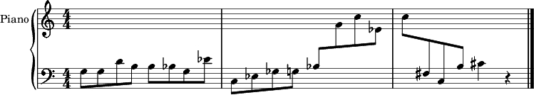Output
Example 9.2. Staccato and Accent Marks
(fomus
:output '(:lilypond :view t)
:parts
(list
(make-part
:name "Piano"
:instr :piano
:events
(loop
for off from 0 to 10 by 1/2
collect (make-note :off off
:dur (if (< off 10) 1/2 1)
:note (+ 48 (random 25))
:marks (case (random 3)
(0 nil)
(1 '(:staccato))
(2 '(:accent))))))))
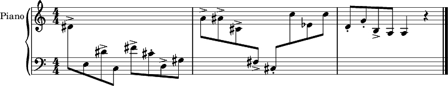Output
Example 9.3. Quartertones
(fomus
:output '(:lilypond :view t)
:quartertones t
:parts
(list
(make-part
:name "Flute"
:instr :flute
:events
(loop
for off from 0 to 10 by 1/2
collect (make-note :off off
:dur (if (< off 10) 1/2 1)
:note (+ 70 (/ (random 4) 2)))))))
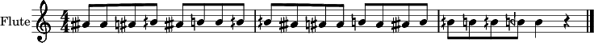Output
Example 9.4. Polyphony with Slurs
(fomus :output '(:lilypond :view t) :verbose 1 :parts (list (make-part :name "Piano" :instr :piano :events (loop for v from 1 to 2 nconc (loop for off from 0 to 10 by 1/2 collect (make-note :off off :dur (if (< off 10) 1/2 1) :note (+ 60 (random 25)) :voice v :marks (when (= (random 3) 0) '(:startslur-))))))))
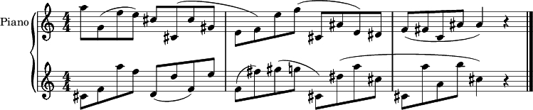Output
Example 9.5. Piano Chords
(fomus :output '(:lilypond :view t) :verbose 1 :ensemble-type :orchestra :parts (list (make-part :name "Piano" :instr :piano :events (loop repeat 3 nconc (loop for off from 0 to 10 by 1/2 collect (make-note :off off :dur (if (< off 10) 1/2 1) :note (+ 48 (random 25)) :voice '(1 2)))))))
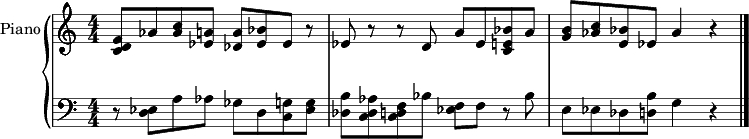Output
Example 9.6. Quantizing/Chords
(fomus :output '(:lilypond :view t) :parts (list (make-part :name "Piano" :instr :piano :events (loop repeat 10 for off = (random 30.0) and dur = (1+ (random 3.0)) collect (make-note :off off :dur dur :note (+ 60 (random 25)))))))
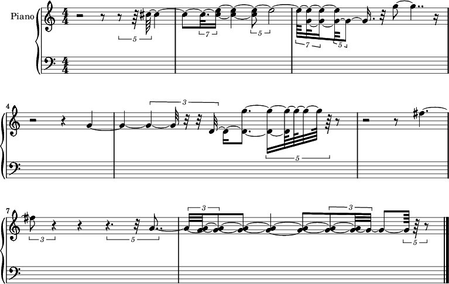Output
Example 9.7. Mark Objects
(fomus :output '(:lilypond :view t) :parts (list (make-part :partid :flute :name "Flute" :instr :flute :events (loop for o from 0 to 20 by 1/2 collect (make-note :off o :dur 1/2 :note 72))) (make-part :partid :tuba :name "Tuba" :instr :tuba :events (loop for o from 0 to 20 by 1/2 collect (make-note :off o :dur 1/2 :note 48)))) :events (loop repeat 10 collect (make-mark :partid (case (random 2) (0 :flute) (1 :tuba)) :off (random 20.0) :marks '(:accent))))
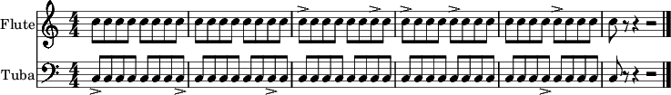Output
Example 9.8. Percussion 1
(fomus :output '(:lilypond :view t) :parts (list (make-part :name "Percussion" :instr (list :percussion :percs (list (make-perc :woodblock :note 'e4) (make-perc :snaredrum :note 'a3))) :events (loop for o from 0 to 20 by 1/2 collect (make-note :off o :dur 1/2 :note (case (random 2) (0 :woodblock) (1 :snaredrum)))))))
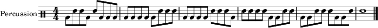Output
Example 9.9. Percussion 2
(fomus :output '(:lilypond :view t) :parts (list (make-part :name "Percussion" :instr (list :percussion :percs (list (make-perc :woodblock :voice 1 :note 'e4) (make-perc :snaredrum :voice 2 :note 'a3))) :events (loop for o from 0 to 20 by 1/2 collect (make-note :off o :dur 1/2 :note (case (random 2) (0 :woodblock) (1 :snaredrum)))))))
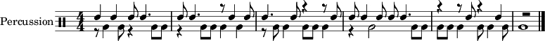Output
Example 9.10. Percussion with Automatic Durations
(fomus :output '(:lilypond :view t) :parts (list (make-part :name "Snare Drum" :instr '(:percussion :percs ((:snare-drum :note a3))) :events (loop for o from 0 to 40 by 1/2 when (= (random 2) 0) collect (make-note :off o :note :snare-drum)))))
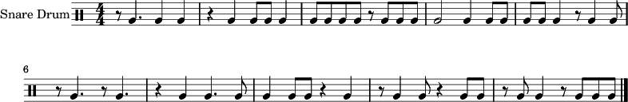Output
Example 9.11. Semi-Orchestra Score
(fomus :output '(:lilypond :view t) :ensemble-type :orchestra :global (list (make-timesig :off 0 :time '(3 4))) :parts (list (make-part :name "Flute 1" :instr :flute :events (list (make-note :off 0 :dur 1 :note 60))) (make-part :partid 'fl2 :name "Flute 2" :instr :flute :events (list (make-note :off 0 :dur 1 :note 60))) (make-part :partid 'cl1 :name "Clarinet 1" :instr :bf-clarinet :events (list (make-note :off 0 :dur 1 :note 60))) (make-part :name "Clarinet 2" :instr :bf-clarinet :events (list (make-note :off 0 :dur 1 :note 60))) (make-part :name "Violin 1" :instr :violin :events (list (make-note :off 0 :dur 1 :note 60))) (make-part :name "Violin 2" :instr :violin :events (list (make-note :off 0 :dur 1 :note 60))) (make-part :name "Cello 1" :instr :cello :events (list (make-note :off 0 :dur 1 :note 48))) (make-part :name "Cello 2" :instr :cello :events (list (make-note :off 0 :dur 1 :note 48))) (make-part :name "Tuba" :instr :tuba :events (list (make-note :off 0 :dur 1 :note 36)))))
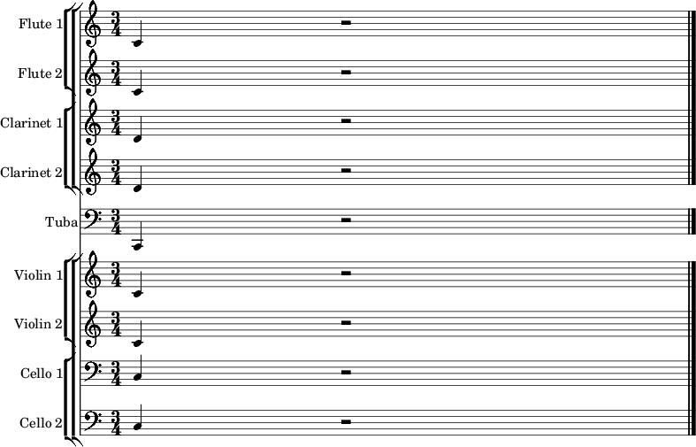Output
Example 9.12. 2 Part Polyphony
(defparameter *part* (new fms:part :instr :piano :partid 'pno)) (defun polygen (voice len minp maxp) (process repeat len output (new fms:note :off (now) :voice voice :partid 'pno :note (between minp maxp) :dur 1/2) wait 1/2)) (events (list (polygen 1 20 60 80) (polygen 2 20 40 60)) "/tmp/fomus.ly" :parts *part* :view t)
Output

Example 9.13. 2 Part Polyphony (FOMUS Chooses the Voice)
(defparameter *part* (new fms:part :instr '(:piano :simultlim 1) :partid 'pno)) (defun polygen (voice len minp maxp) (process repeat len output (new fms:note :off (now) :voice voice :partid 'pno :note (between minp maxp) :dur 1/2) wait 1/2)) (events (list (polygen '(1 2) 20 50 80) (polygen '(1 2) 20 40 70)) "/tmp/fomus.ly" :parts *part* :view t)
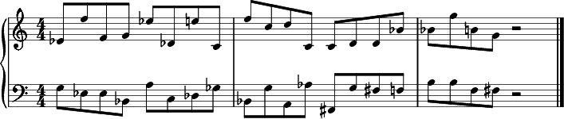Output
Example 9.14. 3 Part Polyphony
(defparameter *part* (new fms:part :instr '(:piano :simultlim 1) :partid 'pno)) (defun polygen (voice len minp maxp) (process repeat len output (new fms:note :off (now) :voice voice :partid 'pno :note (between minp maxp) :dur 1/2) wait 1/2)) (events (list (polygen '(1 2 3) 20 50 70) (polygen '(1 2 3) 20 50 70) (polygen '(1 2 3) 20 50 70)) "/tmp/fomus.ly" :parts *part* :view t)
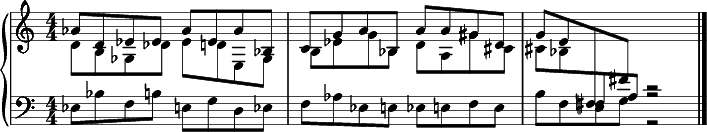Output
Example 9.15. 6 Part Polyphony
(defparameter *parts* (list (new fms:part :name "Violin 1" :instr :violin :partid 'vlns :props '((:distr (v2 2) (v3 3) (v4 4) (v5 5) (v6 6)))) (new fms:part :name "Violin 2" :instr :violin :partid 'v2) (new fms:part :name "Violin 3" :instr :violin :partid 'v3) (new fms:part :name "Violin 4" :instr :violin :partid 'v4) (new fms:part :name "Violin 5" :instr :violin :partid 'v5) (new fms:part :name "Violin 6" :instr :violin :partid 'v6))) (defun polygen (voice len minp maxp) (process repeat len output (new fms:note :off (now) :voice voice :partid 'vlns :note (between minp maxp) :dur 1/2) wait 1/2)) (events (list (polygen '(1 2 3 4 5 6) 20 55 70) (polygen '(1 2 3 4 5 6) 20 60 75) (polygen '(1 2 3 4 5 6) 20 65 80) (polygen '(1 2 3 4 5 6) 20 70 85) (polygen '(1 2 3 4 5 6) 20 75 90) (polygen '(1 2 3 4 5 6) 20 80 95)) "/tmp/fomus.ly" :parts *parts* :quality 3 :view t)
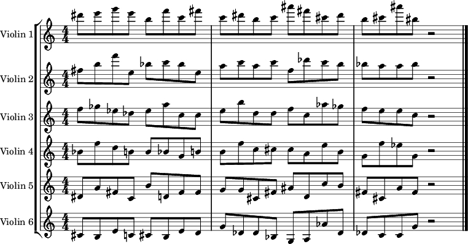Output